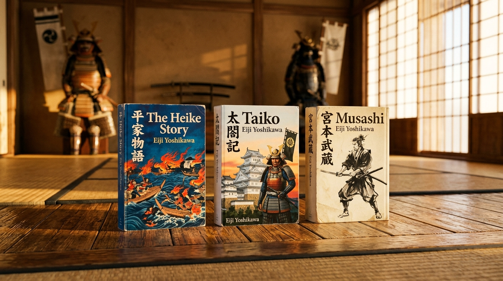

Empat manusia, tiga zaman, satu roda yang sama: bagaimana kekuasaan direbut dengan angkuh, dipertahankan dengan cerdik, lalu — ketika tak ada lagi yang tersisa untuk ditaklukkan — diserahkan kepada pertanyaan paling sunyi tentang diri sendiri. Four men, three ages, one same wheel: how power is seized with arrogance, held with cunning, then — once nothing remains to conquer — surrendered to the quietest question of all, the question of oneself.

Tidak banyak penulis yang berani mengambil seribu tahun sejarah sebuah bangsa dan memampatkannya menjadi wajah-wajah manusia. Eiji Yoshikawa melakukannya bukan dengan menciptakan sejarah baru, melainkan dengan mendengarkan ulang gumaman lama: catatan istana yang membusuk pelan-pelan, kronik perang saudara yang penuh darah dan siasat, dan babad seorang pengembara pedang yang akhirnya berhenti mencari musuh dan mulai mencari dirinya sendiri. Few writers dare to take a thousand years of a nation's history and compress it into human faces. Eiji Yoshikawa did so not by inventing new history, but by listening again to old murmurs: court records rotting slowly from within, chronicles of civil war thick with blood and scheming, and the record of a wandering swordsman who finally stopped searching for enemies and began searching for himself.
Halaman-halaman berikut tidak membaca ketiga kisah ini sebagai rangkaian peristiwa, melainkan sebagai empat riwayat batin yang kebetulan terjadi di panggung sejarah: seorang kanselir yang lupa dari mana ia berasal, seorang adik yang tak pernah cukup dimengerti kakaknya, seorang pelayan sandal yang menaklukkan sebuah negeri, dan seorang pengembara yang, setelah membunuh lebih dari enam puluh orang, memilih menghabiskan sisa hidupnya belajar diam. The pages that follow do not read these three stories as a sequence of events, but as four inner biographies that happened to unfold on history's stage: a chancellor who forgot where he came from, a younger brother never quite understood by his own elder brother, a sandal-bearer who conquered a nation, and a wanderer who, after killing more than sixty men, chose to spend the rest of his life learning silence.
Sebelum ada Kiyomori, ada sebuah zaman yang sudah membusuk dari dalam. Di Kyoto penghujung era Heian, kaum bangsawan istana (kuge) hidup dalam kubah ilusi yang rapuh: mengukur martabat seseorang dari kehalusan bait syair waka, keahlian meracik dupa kōdō, dan keanggunan melipat jubah sutra berlapis dua belas — sementara di lereng Gunung Hiei dan biara Mii-dera, para pendeta pejuang (sōhei) menjelma kawanan tiran bersorban. Memikul tandu keramat (mikoshi) dewa Shinto di atas pundak berotot dan mengayunkan tombak naginata, ribuan biksu bersenjata turun ke ibu kota untuk memeras istana setiap kali tuntutan hak tanah mereka ditolak. Kaisar Pensiun Shirakawa bahkan mengeluh bahwa ada tiga hal di kolong langit yang tak mampu ia kendalikan: luapan air Sungai Kamo, lemparan dadu sugoroku, dan para biksu Gunung Hiei. Di mata para ningrat yang mabuk privilese, klan ksatria (buke) seperti Taira dan Minamoto hanyalah anjing penjaga kelas rendah (inukai) — otot bersenjata yang berbau keringat kuda, dipanggil saat kerusuhan pecah dan diusir kembali ke lumpur begitu tugas selesai. Represi dan penghinaan turun-temurun itulah yang menyulut bara pemberontakan dalam dada Taira no Kiyomori muda: dalam sebuah peristiwa yang menggemparkan ibu kota, ia melangkah maju dan menarik busur besarnya, lalu menembakkan anak panah menembus tandu suci mikoshi di depan para biksu yang terperangah. Tindakan berani mati itu bukan sekadar kenakalan serampangan, melainkan maklumat batin: bahwa era kepalsuan telah usai, dan baja kaum ksatria tak akan lagi tunduk pada kemunafikan jubah suci. Before there was Kiyomori, there was an age already rotting from within. In Kyoto at the close of the Heian era, the court nobility (kuge) drifted inside a fragile bubble of illusion: measuring human worth by the delicate cadences of waka poetry, the refinement of kōdō incense blending, and the elegance of twelve-layered silk robes — while on the misty ridges of Mount Hiei and the cloisters of Mii-dera, the warrior-monks (sōhei) had hardened into armed tyrants in clerical cloth. Hoisting the sacred palanquins (mikoshi) of the Shinto Kami upon brawny shoulders and brandishing iron-tipped naginata, thousands of militant monks marched down upon the capital to terrorize the throne whenever their monastic lands or feudal privileges were questioned. The Retired Emperor Shirakawa famously lamented that three things under heaven defied even imperial sovereignty: the flooding waters of the Kamo River, the roll of the sugoroku dice, and the turbulent monks of Mount Hiei. In the eyes of an aristocracy drunk on its own pedigree, the provincial warrior clans (buke) such as the Taira and Minamoto were scorned as mere guard dogs (inukai) — crude, horse-scented mercenaries summoned to quell unrest and dismissed back to the provincial mud the moment peace was restored. It was that generational humiliation that ignited the fire within the young Taira no Kiyomori: in an incident that sent shockwaves through Kyoto, he strode forth, drew his great hunting bow, and drove an arrow straight through the holy fabric of the mikoshi before the horrified clergy. That reckless act of defiance was no boyish whim, but a spiritual manifesto: the age of hollow sanctity was over, and the steel of the samurai would no longer kneel before hypocrites cloaked in holy silk.
Bara keberanian itu disulut oleh misteri kelahiran yang mengiringi seluruh hidup Kiyomori. Ada desas-desus yang tak pernah benar-benar padam di koridor istana: bahwa ibunya, Gion no Nyōgo — atau saudari perempuannya — pernah menjadi selir terkasih Kaisar Shirakawa, dan dihadiahkan kepada Taira no Tadamori ketika sang wanita telah mengandung janin Kiyomori. Benar atau tidaknya kabar itu, bisikan tersebut menanamkan keyakinan mutlak dalam sanubari Kiyomori bahwa darah kekaisaran sesungguhnya mengalir dalam tubuhnya; bahwa segala manuver yang kelak ia tempuh bukanlah perampasan takhta, melainkan pengembalian hak kelahiran yang dirampas oleh keangkuhan para bangsawan. Sang ayah, Tadamori, adalah teladan ketahanan ksatria sejati. Suatu malam di Balairung Seiryōden, ketika para bangsawan Fujiwara yang dengki merencanakan penyergapan gelap untuk mempermalukan dan membunuhnya karena iri melihat seorang samurai rendahan diizinkan menginjak lantai istana, Tadamori dengan tenang menyelipkan belati kayu yang dibungkus perak berkilau di balik bajunya. Cahaya bilah kayu itu cukup untuk menggentarkan nyali para pengecut tanpa melanggar larangan membawa senjata tajam ke hadapan kaisar. Dari ayahnya, Kiyomori mewarisi dua pelajaran hidup paling berharga: bahwa samurai tak boleh lagi mengemis kehormatan, dan bahwa kesabaran strategi adalah perisai paling kokoh sebelum pedang dihunus. That inner fire was stoked by the mystery of birth that shadowed Kiyomori's entire life. A persistent whisper echoed through the corridors of the court: that his mother, Gion no Nyōgo — or her younger sister — had been a cherished consort of Emperor Shirakawa, gifted to Taira no Tadamori while already carrying Kiyomori in her womb. Whether gospel or rumor, that whisper forged an unshakable conviction in Kiyomori's soul: that imperial blood pulsed through his veins, and that every ruthless climb he would make was not an unlawful theft of power, but the reclamation of a divine birthright stolen by the arrogance of the court. His father, Tadamori, was a paragon of disciplined samurai resilience. One evening in the Seiryōden Palace Hall, when envious Fujiwara nobles plotted to ambush and slaughter him in the dark out of spite that a crude provincial warrior had been granted entry to the inner court, Tadamori calmly tucked a wooden dagger wrapped in gleaming silver foil beneath his robe. The flash of that mock blade was enough to terrify the conspirators into retreat without breaching the sacred taboo against bearing steel in the emperor's presence. From his father, Kiyomori inherited two foundational truths: that the warrior must never beg for honor, and that consummate strategic patience is the strongest shield before the blade is drawn.
Panggung sejarah akhirnya merekah melalui darah dua prahara besar yang menyudahi kedamaian semu Heian. Dalam Pemberontakan Hōgen (1156), perpecahan keluarga kekaisaran antara Kaisar Go-Shirakawa dan mantan Kaisar Sutoku menyeret klan-klan samurai ke dalam pertarungan brutal yang membelah ikatan darah: Kiyomori dan Minamoto no Yoshitomo untuk sesaat bertarung di kubu yang sama, menyaksikan kengerian di mana ayah membantai anak dan adik memenggal abang. Demi menancapkan legitimasi, Kiyomori mengeksekusi pamannya sendiri Tadamasa, sementara Yoshitomo dipaksa memenggal kepala ayah kandungnya sendiri, Tameyoshi. Namun persekutuan berdarah itu segera membusuk menjadi kecemburuan. Merasa jasanya dianaktirikan oleh istana yang lebih memanjakan klan Taira, Yoshitomo melancarkan kudeta dalam Pemberontakan Heiji (1159). Mengambil kesempatan saat Kiyomori sedang menempuh ziarah suci ke Kumano, pasukan Minamoto membakar Istana Sanjō dan menawan kaisar. Namun Kiyomori membalas dengan kejeniusan strategi yang kilat: ia pura-pura berdamai, memancing para pemberontak keluar dari istana ke kubu pertahanan Rokuhara, lalu menghancurkan barisan kavaleri Minamoto dalam pertempuran sengit di tepi Sungai Kamo. Yoshitomo melarikan diri ke timur, namun dibunuh secara pengecut di bak pemandian air panas oleh pengikutnya sendiri, Osada Tadamune, yang tergiur imbalan emas. Klan Minamoto hancur lebur; panji merah Taira kini berkibar tanpa tandingan di atas langit Kyoto. The stage of history finally cracked open through the blood of two cataclysms that extinguished the twilight peace of Heian. In the Hōgen Rebellion (1156), a rift within the imperial house between Emperor Go-Shirakawa and the retired Emperor Sutoku dragged the warrior clans into a fratricidal nightmare: Kiyomori and Minamoto no Yoshitomo fought briefly on the same flank, witnessing an abyss where fathers slaughtered sons and brothers decapitated brothers. To cement his authority, Kiyomori executed his own uncle Tadamasa, while Yoshitomo was compelled to behead his own biological father, Tameyoshi. Yet that bloody alliance quickly soured into bitter resentment. Feeling slighted by a court that lavished lands and titles exclusively upon the Taira, Yoshitomo launched a sudden coup in the Heiji Rebellion (1159). Seizing the moment while Kiyomori was on sacred pilgrimage to Kumano, Minamoto cavalry torched the Sanjō Palace and seized the emperor. But Kiyomori struck back with breathtaking speed and cunning: feigning reconciliation, he lured the rebels from the palace grounds into the killing fields before the Rokuhara fortress, annihilating the Minamoto ranks in ferocious combat along the banks of the Kamo River. Yoshitomo fled eastward, only to be butchered in a bathhouse by his treacherous retainer, Osada Tadamune, hungry for Taira gold. The Minamoto were obliterated; the crimson banners of the Taira flew unchallenged over Kyoto.
Di titik inilah, di tengah dinginnya musim dingin tahun 1160, takdir menorehkan adegan paling menentukan dalam seluruh epos The Heike Story. Putra ketiga Yoshitomo yang baru berusia tiga belas tahun, Minamoto no Yoritomo, tersesat di tengah badai salju pegunungan Ōmi saat melarikan diri, lalu ditangkap dan digiring dalam belenggu besi ke hadapan Kiyomori di pelataran Rokuhara untuk dipenggal. Di hadapan algojo yang telah menghunus pedang, bocah yatim itu tidak menangis, tidak mengemis ampun, melainkan menatap sang penakluk dengan ketenangan batin yang menghunjam sukma. Ibu tiri Kiyomori, Ike no Zenni, yang menyaksikan pemandangan itu, tercekat: wajah Yoritomo mengingatkannya secara gaib pada mendiang putranya, Iemori, yang meninggal di usia belia. Hancur oleh rasa keibuan, Ike no Zenni bersujud di lantai kayu, mencium debu di kaki Kiyomori, dan memohon agar nyawa bocah itu diampuni — bersumpah akan menusuk tenggorokannya sendiri jika anak itu dibunuh. Terikat oleh bakti (oya-kō) kepada sang ibu tiri, Kiyomori menarik kembali perintah mautnya: hukuman pancung dibatalkan dan diganti dengan pembuangan seumur hidup ke Hirugakojima, sebuah delta terpencil di semenanjung tandus Izu. Bagi Kiyomori, membuang anak piatu tanpa senjata ke ujung timur tampak seperti tindakan belas kasihan yang tak berbahaya. Ia tidak pernah menyadari bahwa tetesan air mata Ike no Zenni pagi itu adalah titik balik kosmis sejarah Jepang: sebuah ampunan yang kelak menenun kain kafan bagi seluruh keturunan klan Taira. It was here, amidst the freezing winds of the winter of 1160, that fate etched the most fateful scene in the entire chronicle of The Heike Story. Yoshitomo's thirteen-year-old third son, Minamoto no Yoritomo, had lost his way in the blinding snows of Ōmi province during the retreat, and was dragged in iron chains before Kiyomori at Rokuhara to meet the executioner's blade. Before the drawn steel, the orphaned boy neither wept nor begged for mercy; he gazed up at the conqueror with a haunting, impenetrable dignity. Kiyomori's stepmother, Ike no Zenni, who was watching from behind the lattice blinds, was struck to the marrow: in the boy's calm, aristocratic eyes she saw the phantom likeness of her own beloved son, Iemori, who had died in youth. Overcome by maternal anguish, Ike no Zenni threw herself upon the polished timber, pressed her forehead into the dust at Kiyomori's feet, and pleaded for the orphan's life — swearing to plunge a dagger into her throat should the boy be put to death. Bound by filial devotion (oya-kō), Kiyomori relented: the death sentence was commuted to indefinite exile on Hirugakojima, a windswept sandbar on the volcanic peninsula of Izu. To Kiyomori, exiling an unarmed, friendless orphan to the wild eastern frontier seemed a harmless act of magnanimity. He could not foresee that Ike no Zenni's tears that winter morning were a cosmic pivot in history: a single grain of misplaced mercy that would one day weave the burial shroud of the entire House of Taira.
Selama dua puluh tahun berikutnya, Hirugakojima menjadi kawah candradimuka yang menempa jiwa Yoritomo dari seorang buronan tak berdaya menjadi arsitek negara yang berhati baja. Di bawah pengawasan ketat dua klan pengawal Taira — Itō Sukechika dan Hōjō Tokimasa — Yoritomo hidup dalam ancaman belati pembunuh yang bisa menyelinap kapan saja. Di tanah pengasingan itu, ia mencicipi kepedihan manusiawi paling purba: asmara terlarangnya dengan Yae-hime, putri Sukechika, melahirkan seorang bayi laki-laki bernama Chizuru-maru. Namun ketika Sukechika pulang dari Kyoto dan gemetar membayangkan murka Kiyomori jika mengetahui darah Minamoto bertunas di tanahnya, ia memerintahkan para prajurit merenggut bayi mungil itu dan menenggelamkannya ke air terjun Todoroki. Mengetahui dirinya hendak diburu, Yoritomo memacu kudanya menembus badai malam di lereng Gunung Hakone, mencari perlindungan ke kediaman Hōjō Tokimasa. Di sanalah takdir mempertemukannya dengan Hōjō Masako — seorang gadis berkemauan besi yang menolak perjodohan ayahnya dengan pejabat Heike, melarikan diri menunggang kuda menembus hujan lebat di tengah malam buta untuk menyelinap ke pelukan Yoritomo. Masako bukan sekadar permaisuri; ia adalah belahan jiwa strategis yang menopang ambisinya. Dalam gubuk kayunya yang sunyi di Izu, Yoritomo melafalkan doa Sutra Teratai setiap hari untuk arwah para leluhurnya, mempelajari jalinan sengketa tanah para ksatria Kantō yang muak pada pungutan liar istana, dan membekukan seluruh kehangatan jiwanya menjadi kesabaran politis yang sedingin glasier. For the next twenty years, Hirugakojima became the crucifying forge that tempered Yoritomo's soul from a helpless outcast into a statesman of cold iron. Under the watchful surveillance of his Taira wardens — Itō Sukechika and Hōjō Tokimasa — Yoritomo lived under the perpetual shadow of a midnight blade. In that wilderness, he tasted the rawest human agony: his clandestine romance with Yae-hime, Sukechika’s daughter, bore a baby boy named Chizuru-maru. Yet when Sukechika returned from court duty in Kyoto and trembled in terror at the wrath of the Heike should a Minamoto seedling be discovered on his soil, he ordered the newborn babe ripped from its cradle and drowned in the roaring torrent of the Todoroki waterfall. Warned of an assassination squad, Yoritomo spurred his horse through a tempest across the crags of Mount Hakone, seeking sanctuary with Hōjō Tokimasa. It was there that destiny bound him to Hōjō Masako — a woman of indomitable will who defied her father’s arranged betrothal to a Taira magistrate, riding alone through a violent midnight thunderstorm to fling herself into Yoritomo’s arms. Masako was no mere bride; she was his strategic twin who stiffened his spine and shared his darkest ambitions. In his modest timber cottage in Izu, Yoritomo spent the decades chanting the Lotus Sutra for the souls of his slain ancestors, mapping the simmering grievances of the Kantō gentry over Kyoto's rapacious land taxes, and chilling his heart into an icy, impenetrable patience.
Sementara Yoritomo membeku dalam kesunyian Izu, Kiyomori melesat ke puncak kekuasaan yang membutakan. Pada 1167, ia diangkat sebagai Daijō-daijin (Kanselir Agung) — menjadikannya samurai pertama dalam sejarah yang menduduki pos sipil tertinggi kekaisaran. Enam belas kerabat dekatnya menduduki kursi kementerian, dan lebih dari separuh dari enam puluh enam provinsi Jepang berada di bawah kekuasaan langsung klan Taira. Dari bibir adik iparnya, Taira no Tokitada, lahir ungkapan congkak yang melegenda: "Heike ni arazunba hito ni arazu" — "Siapa pun yang bukan keluarga Heike, maka ia bukanlah manusia." Untuk mempertahankan hegemoni absolut itu, Kiyomori mendirikan dinas intelijen yang meneror seluruh ibu kota: tiga ratus anak laki-laki berambut poni pendek (Kaburo), mengenakan jubah merah cerah, dilepas berkeliaran di pasar-pasar, kedai sake, dan sudut-sudut jalan Kyoto. Tugas mereka adalah menguping percakapan rakyat; barang siapa berani membisikkan satu kata keluhan tentang klan Heike, para Kaburo akan memberi isyarat kepada prajurit bersenjata untuk menangkapnya, mencukur rambutnya, merampas hartanya, dan menyeretnya ke penjara bawah tanah. Samurai yang dulu bangkit untuk membela kaum tertindas kini telah bermetamorfosis sempurna menjadi monster penindas yang jauh lebih mengerikan dari bangsawan mana pun yang pernah mereka singkirkan. While Yoritomo forged his soul in the frozen silence of Izu, Kiyomori soared to a pinnacle of blinding hegemony. In 1167, he was appointed Daijō-daijin (Chancellor of the Realm) — the first warrior in Japanese history to attain the empire's supreme civil rank. Sixteen of his closest kinsmen sat as imperial ministers, and more than half of Japan's sixty-six provinces were governed directly by the Taira house. From the lips of his brother-in-law, Taira no Tokitada, came the infamous aphorism that summarized their hubris: "Heike ni arazunba hito ni arazu" — "He who is not a Heike is no human being at all." To sustain this absolute dominion, Kiyomori established a domestic spy network that terrorized Kyoto: three hundred youths with bobbed hair (Kaburo), clad in matching red tunics, were unleashed through the bazaars, taverns, and back-alleys of the capital. Their sole mission was to eavesdrop on the common folk; anyone caught whispering a single complaint against the Heike was instantly surrounded, dragged off by waiting guards, stripped of their belongings, and cast into dungeons. The provincial samurai who had originally risen to shatter the shackles of aristocratic tyranny had transformed entirely into monsters of oppression far more ruthless than the effete nobles they had replaced.
Puncak siasat Kiyomori bukan lagi pedang, melainkan apa yang dapat disebut kudeta genetik: ia menikahkan putrinya, Tokuko (kelak bergelar Kenreimon-in), dengan Kaisar Takakura. Pada 1180, buah dari pernikahan itu — cucu kandungnya sendiri yang baru berusia dua tahun — dinaikkan ke Takhta Bunga Seruni sebagai Kaisar Antoku. Kiyomori kini menjadi kakek sang kaisar sekaligus penguasa tunggal tak tertandingi di balik tirai kekuasaan. Namun di balik kegemilangan istana Rokuhara, pembusukan batin merayap tak terhentikan, sebagaimana terabadikan dalam kisah penari Giō. Selama bertahun-tahun Giō adalah penghibur kesayangan Kiyomori, dihujani kemewahan dan dipuja di seantero negeri. Namun ketika seorang penari muda bernama Hotoke-Gozen datang dan memikat mata sang kanselir, Giō dicampakkan dalam semalam tanpa belas kasihan, diusir keluar dari istana seperti kain perca usang. Dihancurkan oleh penghinaan itu, Giō bersama ibu dan adik perempuannya memangkas rambut mereka, menjadi biksuni di sebuah gubuk bambu sunyi di Saga untuk meratapi ilusi cinta duniawi. Pencerahan datang ketika beberapa musim kemudian, Hotoke-Gozen sendiri — yang ketakutan melihat nasib Giō dan sadar bahwa kecantikannya pun hanya soal waktu sebelum dibuang — melarikan diri dari istana, menyusul ke pondok Giō, dan turut mencukur rambutnya untuk menghabiskan sisa hidup bersama dalam doa. Bagi kedua perempuan itu, mencukur rambut di hadapan altar Amida Buddha adalah pemberontakan eksistensial tertinggi: melepaskan diri dari cengkeraman seorang tiran yang mengira bahwa segala keindahan di muka bumi dapat dibeli dan dibuang sesuka hatinya. The apex of Kiyomori's maneuvering was no longer fought with steel, but through what was effectively a genetic coup: he married his daughter Tokuko (later revered as Kenreimon-in) to Emperor Takakura. In 1180, the fruit of that union — his own two-year-old maternal grandson — was elevated to the Chrysanthemum Throne as Emperor Antoku. Kiyomori now stood as the sovereign's grandfather and absolute master behind the bamboo blinds of state. Yet behind the dazzling facades of the Rokuhara palaces, moral rot consumed the clan from within, immortalized in the tragic tale of the dancer Giō. For years, Giō had reigned as Kiyomori's adored court dancer, showered in pearls and envied across the realm. But the moment a younger dancer named Hotoke-Gozen appeared and captivated the chancellor's fickle eye, Giō was cast aside overnight without a trace of remorse, dismissed like an outmoded screen. Shattered by this humiliation, Giō, together with her mother and sister, shaved their heads and became Buddhist nuns in a solitary hut in Saga, seeking refuge from the vanity of court life. The wheel turned full circle when, months later, Hotoke-Gozen herself — haunted by guilt and realizing that her own youth was merely a temporary bauble destined for the same discard heap — fled the palace in disguise, knocked on Giō’s door, and shaved her locks to join her in prayer. For both women, the tonsure before Amida Buddha was the ultimate existential revolt: tearing their lives away from a despot who believed that all grace in the world existed solely for his amusement.
Kecongkakan itu akhirnya bermetamorfosis menjadi kegilaan politik dan penistaan spiritual. Terobsesi oleh perdagangan maritim dengan Dinasti Song di Tiongkok yang telah ia rintis selama bertahun-tahun, Kiyomori secara sepihak memaksakan pemindahan ibu kota dari Kyoto yang telah berusia empat abad ke pelabuhan Fukuhara (wilayah Kobe modern). Keputusan impulsif itu merobek tatanan istana, memaksa para bangsawan dan rakyat jelata tinggal di permukiman darurat yang diguyur badai laut, dan menyulut kemarahan luas hingga rencana itu terpaksa dibatalkan hanya enam bulan kemudian dalam aib yang memalukan. Namun dosa terbesarnya terjadi di Nara. Ketika para biksu bersenjata di Kuil Kōfuku-ji dan Tōdai-ji memberontak menentang hegemoni Heike, Kiyomori mengirim putranya, Taira no Shigehira, untuk melancarkan penumpasan berdarah pada musim dingin 1180. Api yang disulut pasukan Heike menjalar liar menjadi lautan neraka: kompleks suci Tōdai-ji terbakar habis, Aula Daibutsuden runtuh dalam kobaran api raksasa, dan kepala Patung Buddha Perunggu Agung (Daibutsu) meleleh menjadi gumpalan logam cair, memanggang ribuan biksu dan warga tak berdosa yang mencari perlindungan di dalamnya. Sejak malam penistaan suci itu, rakyat Jepang percaya bahwa para dewa dan Buddha telah menarik restunya dari trah Taira; kutukan moral merembes dari setiap kuil di penjuru negeri, menyatukan kebencian rakyat untuk menanti kejatuhan sang tiran. That hubris soon manifested as erratic statecraft and unspeakable sacrilege. Obsessed with maritime trade with Song-dynasty China which he had cultivated for years, Kiyomori unilaterally decreed the abandonment of four-hundred-year-old Kyoto and moved the imperial capital to his coastal port of Fukuhara (modern Kobe). The impulsive upheaval threw the state into disarray, forcing aristocrats and laborers to huddle in half-built encampments lashed by sea storms, provoking such nationwide outrage that the court was forced to scuttle back to Kyoto six months later in public humiliation. Yet his unforgivable transgression occurred at Nara. When militant monks at Kōfuku-ji and Tōdai-ji defied Heike decrees, Kiyomori dispatched his son, Taira no Shigehira, to execute a punitive expedition in the winter of 1180. The fires set by Heike torches whipped into a howling firestorm: the ancient sanctuary of Tōdai-ji was reduced to cinders, the colossal Daibutsuden collapsed in thunder, and the bronze head of the Great Buddha melted into slag, roasting thousands of monks and refugees who had sought sanctuary within its halls. From that night of holy desecration, the populace believed the gods and Buddhas had turned their faces away from the Taira; a pall of moral doom settled over the clan, uniting the whispered prayers of the realm for their imminent fall.
Watak yang membawanya naik adalah watak yang sama yang membutakannya di puncak.The very nature that carried him upward was the same nature that blinded him at the summit.
Satu-satunya lentera moral yang sempat menahan kejatuhan itu adalah putra sulung Kiyomori sendiri, Taira no Shigemori. Sebagai ksatria yang arif dan dihormati di istana, Shigemori menghabiskan sisa hidupnya dalam siksaan batin yang mencabik sukma: terjepit di antara oya-kō — bakti suci seorang anak kepada ayahnya — dan chū, sumpah kesetiaan seorang ksatria kepada takhta kekaisaran. Ketika Kiyomori berniat melakukan kudeta bersenjata untuk memenjarakan Kaisar Pensiun Go-Shirakawa, Shigemori mengenakan zirah perangnya dan bersimpuh di hadapan sang ayah sambil berurai air mata darah: "Jika hamba setia kepada kaisar, hamba durhaka kepada Ayahanda; namun jika hamba berbakti kepada Ayahanda, hamba adalah pengkhianat tercela bagi kaisar. Jika Ayahanda bersikeras menyerang istana, penggallah kepala hamba terlebih dahulu agar mata ini tak perlu menyaksikan aib kehancuran nama leluhur kita!" Ketegasan moral Shigemori sempat meluluhkan amarah ayahnya; namun derita batin yang menumpuk meremukkan kesehatannya. Ketika Shigemori wafat di usia empat puluh dua tahun pada 1179, catatan-catatan sezaman menyiratkan bahwa ia meninggal bukan karena luka perang, melainkan karena jiwanya hancur menanggung beban dosa-dosa ayahnya. Dengan padamnya lentera nurani Shigemori, tak ada lagi dinding penghalang yang tersisa untuk menahan keangkuhan Kiyomori dari jurang kehancuran. The sole moral beacon that briefly stayed that descent was Kiyomori's eldest son and heir, Taira no Shigemori. A chivalrous and universally revered statesman, Shigemori lived his life in harrowing spiritual torment: trapped between oya-kō — the sacred filial piety owed to his father — and chū, the inviolable oath of loyalty owed to the imperial throne. When Kiyomori resolved to mount an armed coup to imprison the Retired Emperor Go-Shirakawa, Shigemori donned his war harness and prostrated himself before his father, weeping tears of agony: "If I remain loyal to my sovereign, I become an unfilial monster to my father; yet if I obey my father, I stand as a wretched traitor to the throne. If your lordship insists on marching upon the palace, sever my head first, so these eyes need not behold the ruin of our ancestral name!" Shigemori’s moral fury forced his father to draw back; yet the crushing grief broke his body. When Shigemori died at forty-two in 1179, contemporary accounts recorded that he perished not from wounds of steel, but of a broken heart under the weight of his father’s sins. With the passing of Shigemori’s moral compass, the last bulwark protecting Kiyomori from his own hubris was extinguished forever.
Pada Mei 1180, retakan itu meledak menjadi badai nasional. Pangeran Mochihito, putra Kaisar Go-Shirakawa yang hak takhtanya dirampas oleh intrik Heike, bersama ksatria sepuh Minamoto no Yorimasa mengeluarkan Titah Rahasia Kekaisaran (Ryōji). Pamannya, Minamoto no Yukiie, menyamar sebagai biksu pengembara dan menyelundupkan gulungan titah itu melintasi pegunungan menuju bilik sunyi Yoritomo di Izu. Saat segel titah dibuka, Yoritomo tahu bahwa dua puluh tahun penantian dinginnya telah usai. Dengan restu Hōjō Tokimasa, ia membentangkan panji putih klan Genji dan mengangkat senjata di Pertempuran Gunung Ishibashi (Ishibashiyama). Meski awalnya pasukannya yang berjumlah tiga ratus ksatria dihancurkan oleh ribuan pasukan Heike dan ia terpaksa bersembunyi di dalam rongga pohon tumbang yang diguyur hujan lebat — di mana nyawanya diselamatkan oleh komandan musuh Kajiwara Kagetoki yang berpura-pura tidak melihatnya — Yoritomo bangkit laksana badai. Ia menyeberang ke Semenanjung Awa, dan dalam hitungan pekan, puluhan ribu ksatria Kantō yang haus kemerdekaan berbondong-bondong membanjiri panji putihnya. Pasukan ekspedisi raksasa Taira yang dikirim Kiyomori di bawah pimpinan cucunya Koremori terhenti di Sungai Fuji (Fujikawa) pada musim gugur 1180: di tengah kegelapan kabut malam, ribuan burung air rawa mendadak terbang mengepakkan sayap secara serentak. Mengira deru itu adalah serbuan kavaleri Yoritomo, seluruh barisan samurai Heike panik histeris dan lari tunggang-langgang tanpa sempat menghunus satu bilah pedang pun. Lonceng kematian klan Taira telah mulai berdentang dari timur. In May 1180, the fissure detonated into national insurrection. Prince Mochihito, passed over for the succession by Heike machinations, conspired with the veteran warrior Minamoto no Yorimasa to issue a clandestine imperial prince's decree (Ryōji), summoning all sons of the Genji lineage across the provinces to rise and crush the Taira tyrants. His uncle, Minamoto no Yukiie, disguised as a wandering monk, smuggled the silk mandate across mountain passes to Yoritomo's secluded chamber in Izu. Unrolling the scroll, Yoritomo recognized that his twenty years of icy exile had borne their harvest. With the backing of Hōjō Tokimasa, he unfurled the pure white banner of the Genji and struck at the Battle of Mount Ishibashi (Ishibashiyama). Though his outnumbered band was routed in a torrential tempest and he was forced to crouch inside a hollow rotted log — where his life was preserved by the enemy commander Kajiwara Kagetoki, who saw him in the shadows but deliberately led the search party away — Yoritomo rose like an unstoppable squall. Fleeing by boat to the Awa peninsula, within weeks tens of thousands of fierce Kantō horsemen rallied beneath his white standard. The massive punitive army dispatched by Kiyomori under his grandson Koremori halted at the Fuji River (Fujikawa) in the autumn of 1180: in the pitch darkness of the midnight mist, a flock of thousands of roosting waterbirds suddenly took flight. Mistaking the thunder of beating wings for the charge of Yoritomo's cavalry, the entire Heike host broke into blind panic, fleeing in shameful rout before a single blow was struck. The death knell of the Taira had sounded from the east.
Kiyomori tak sempat membalaskan kehinaan itu di medan laga. Pada awal musim semi 1181, bayang-bayang maut menjemputnya bukan melalui ujung tombak musuh, melainkan penyakit gaib yang dicatat dalam sejarah sebagai atsuchi (demam membara). Tubuh sang Kanselir Agung terbakar oleh suhu panas yang begitu dahsyat hingga siapa pun yang melangkah dalam jarak beberapa depa dari pembaringannya tercekik oleh uap panas dan bau hangus keringatnya; air dingin dari mata air pegunungan yang disiramkan ke atas dadanya seketika mendidih menjadi uap panas yang mendesis ke udara. Di tengah kejang-kejang dan igau mautnya di Rokuhara, Kiyomori dihantui bayang-bayang kobaran api kuil Nara dan ratap arwah ribuan korban perang. Namun hingga embusan napas terakhirnya, arogansi ksatria tua itu menolak tunduk pada penyesalan. Ketika istrinya, Taira no Tokiko (Nun Nii), bertanya apa wasiat terakhirnya, Kiyomori memekik dengan suara serak yang menggetarkan seisi ruangan: "Sejak zaman Hōgen dan Heiji, aku telah mengabdi dan menumpas seluruh musuh istana... Satu-satunya penyesalanku di bawah kolong langit ini adalah belum sempat melihat kepala Minamoto no Yoritomo! Jangan pernah kalian mendirikan kuil untukku! Jangan pernah mempersembahkan dupa pembacaan sutra bagiku! Kirimkan seluruh bala tentara ke timur, tebas leher Yoritomo, dan gantung kepalanya di depan makamku!" Sang kanselir menghembuskan napas terakhirnya dalam amarah yang membara — meninggalkan sebuah dinasti yang terhuyung-huyung menuju jurang pemusnahan. Kiyomori never lived to avenge that humiliation on the battlefield. In the early spring of 1181, death claimed him not through the edge of an enemy spear, but via an agonizing affliction chronicled in lore as atsuchi (the blazing fever). The Chancellor's flesh burned with heat so incandescent that attendants who stepped within paces choked upon the scorching steam and sulfurous stench of his sweat; cold spring water poured upon his torso boiled instantly into hissing vapor. In the throes of his deathbed agony at Rokuhara, Kiyomori was tormented by hallucinatory visions of the inferno of Nara and the wailing ghosts of the slain. Yet to his final gasp, the old lion's arrogance refused repentance. When his devoted wife, Taira no Tokiko (the Nun of the Second Rank), knelt by his pillow to ask for his final testament, Kiyomori rasped with terrifying fury: "Since the days of Hōgen and Heiji, I have pacified the realm and crushed every enemy of the throne... My sole regret under heaven is that I have not yet looked upon the severed head of Minamoto no Yoritomo! Build no temples for me! Light no incense, chant no sutras for my soul! Dispatch every legion to Kamakura, sever the neck of Yoritomo, and hang his head before my tomb!" The chancellor expired in convulsive fury — leaving behind a hollow empire already stumbling toward the abyss.
Kematian Kiyomori mengukuhkan kebenaran bait pembuka Heike Monogatari yang abadi: "Gion Shōja no kane no koe, Shogyō Mujō no hibiki ari; Sara sōju no hana no iro, Jōsha hissui no kotowari o arawasu" — Suara genta biara Gion Shōja menggemakan ketidakkekalan segala yang ada; warna bunga pohon sala menyingkapkan hukum semesta bahwa mereka yang berada di puncak kejayaan niscaya akan runtuh terhempas. Tragedi kejatuhan klan Taira bukanlah semata-mata kalah adu siasat di palung laut Dan-no-ura empat tahun kemudian, melainkan pembusukan spiritual dari dalam: seorang ksatria yang lupa dari mana ia berasal, mendirikan dinasti di atas teror mata-mata Kaburo, dan meniru dekadensi aristokrat yang dulu ia benci. Dan di balik seluruh babad kepahlawanan itu, terpatri ironi terbesar dalam sejarah Jepang: anak piatu berwajah pucat yang diampuni Kiyomori di tengah salju Rokuhara pada 1160, kini berdiri tegak di Kamakura sebagai Shogun pertama yang menorehkan era baru supremasi samurai. Tindakan belas kasihan tunggal yang pernah dilakukan Kiyomori dalam hidupnya menjadi senjata takdir yang menumpas seluruh darah keturunannya — membuktikan bahwa dalam pusaran karma (innen), kekuasaan yang dibangun tanpa penaklukan atas nafsu diri sendiri pada akhirnya akan diruntuhkan oleh benih yang ia tebar dengan tangannya sendiri. Kiyomori's agonizing end sealed the eternal truth of the opening verses of the Tale of the Heike: "Gion Shōja no kane no koe, Shogyō Mujō no hibiki ari; Sara sōju no hana no iro, Jōsha hissui no kotowari o arawasu" — The sound of the Gion Shōja bells echoes the impermanence of all things; the color of the sāla flowers reveals the truth that the prosperous must decline. The catastrophe of the House of Taira was not decided merely by tactical blunders at Dan-no-ura four years later, but by a soul rotting from within: a warrior who forgot where he came from, policed his empire with child inquisitors (Kaburo), and aped the effete decadence of the aristocrats he had once despised. And behind the grand tapestry of battles lies the supreme irony of Japanese history: the pale orphan whom Kiyomori had spared in the snow of Rokuhara in 1160 now stood triumphant at Kamakura as the realm's first Shogun, forging a seven-hundred-year epoch of warrior rule. That single act of mercy became the instrument of karmic retribution (innen) that annihilated the Taira seed — proof that power devoid of spiritual self-mastery is ultimately shattered by the very harvest it sowed with its own hand.
Pemberontakan Heiji (1159–1160) bukan sekadar keruntuhan faksi Minamoto; ia adalah palu godam yang memecah nasib dua anak laki-laki menjadi dua mata angin yang tak akan pernah bisa dipertemukan kembali. Ketika kepala ayah mereka, Minamoto no Yoshitomo, dipajang di tepi Sungai Kamo, Minamoto no Yoritomo baru berusia tiga belas tahun. Sebagai putra sah dari garis utama klan Genji, nyawanya hanya selamat berkat permohonan belas kasih ibu tiri Kiyomori, Ike no Zenni, sebelum ia dilempar ke pengasingan sunyi di semenanjung tandus Izu. Selama lebih dari dua puluh tahun, di bawah tatapan curiga klan pengawas Hōjō, Yoritomo hidup dalam bayang-bayang hukuman mati yang bisa jatuh kapan saja. Masa muda yang dingin itu mematikan setiap percik kenaifan dalam dadanya: ia ditempa menjadi arsitek politik yang luar biasa sabar, penuh perhitungan dingin, paranoid terhadap setiap gerak-gerik manusia di sekelilingnya, dan belajar bahwa di dunia para ksatria, kesetiaan bukanlah masalah cinta kasih, melainkan kalkulasi birokrasi dan hierarki yang tak boleh retak barang sehelai rambut pun. The Heiji Rebellion (1159–1160) was no mere collapse of the Minamoto faction; it was a sledgehammer that split the fates of two half-brothers into two compass points that could never truly meet again. When the severed head of their father, Minamoto no Yoshitomo, was displayed by the banks of the Kamo River, Minamoto no Yoritomo was merely thirteen years old. As the legitimate heir of the Genji lineage, his life was spared only through the desperate pleading of Kiyomori’s stepmother, Ike no Zenni, before he was cast into solitary exile on the windswept peninsula of Izu. For more than twenty years, under the watchful, suspicious eyes of his Hōjō wardens, Yoritomo lived in the perpetual shadow of an execution that could descend at any hour. That frozen youth stripped every trace of naivety from his soul: it forged him into a political architect of terrifying patience, cold calculation, and deep-seated paranoia, teaching him that in the world of warriors, loyalty was never a matter of sentiment, but an unbending calculus of bureaucratic discipline that permitted not a hair’s breadth of deviance.
Di kutub yang berseberangan, adik bungsunya, Ushiwaka-maru — yang kelak dikenal dunia sebagai Minamoto no Yoshitsune — belum genap berusia satu tahun ketika prahara Heiji meletus. Hidupnya dibeli dengan pengorbanan mutlak ibunya, Tokiwa Gozen: perempuan jelita itu menerobos badai salju Gunung Ryūmon sambil mendekap tiga bayinya, lalu menyerahkan diri ke ranjang sang penakluk, Taira no Kiyomori, semata agar anak-anaknya tidak disembelih. Ushiwaka kemudian dikirim ke puncak berkabut Kuil Kurama di utara Kyoto untuk ditahbiskan menjadi biksu. Namun darah serigala perang menolak dikebiri jubah suci: legenda mencatat bagaimana setiap malam ia menyelinap ke lembah gelap Sōjōgatani, berlatih pedang bersama bayang-bayang dan roh pegunungan tengu. Sebelum sempat dipangkas rambutnya, ia melarikan diri melintasi pegunungan belantara menuju Hiraizumi di Ōshū utara, berlindung di bawah dekapan hangat Fujiwara no Hidehira yang memperlakukannya bak putra mahkota. Yoshitsune tumbuh tanpa pernah mengenal ayah, tanpa pernah mencicipi intrik kotor ruang takhta, dan tanpa memahami dinginnya hukum kekuasaan: ia menjelma menjadi seorang pemuda yang tampan, impulsif, berapi-api, seorang jenius perang murni yang memandang dunia dengan ketulusan yang polos sekaligus berbahaya. At the opposite pole, his youngest half-brother, Ushiwaka-maru — whom the world would immortalize as Minamoto no Yoshitsune — was not even a year old when the Heiji storm broke. His life was purchased through the absolute sacrifice of his mother, Tokiwa Gozen: the legendary beauty braved the blinding blizzards of Mount Ryūmon clutching her three babes, ultimately surrendering herself to the conqueror Kiyomori’s bed solely to shield her children from slaughter. Ushiwaka was later packed off to the misty heights of Kurama Temple north of Kyoto to be tonsured into priesthood. Yet the blood of war-wolves refused the cloister: legends recount how he slipped into the shadowed gorge of Sōjōgatani each night to master the blade alongside phantom mountain tengu. Before the razor could touch his scalp, he fled across hundreds of miles of wilderness to Hiraizumi in northern Ōshū, finding sanctuary in the warm embrace of the northern lord Fujiwara no Hidehira, who treated him as a beloved prince. Yoshitsune grew up having never known a father, having never breathed the foul air of court intrigue, and blind to the cold mechanics of statecraft: he became handsome, mercurial, fiercely daring, and a pure military genius who viewed the world with an innocence as blinding as it was fatal.
Ketika panji putih Minamoto akhirnya berkibar kembali pada musim gugur 1180, Yoritomo telah bangkit memimpin para klan Kantō dan memenangkan Pertempuran Fujikawa tanpa perlu mengotori pedangnya. Saat pasukannya berkemah di tepi Sungai Kisegawa di provinsi Suruga, seorang penunggang kuda muda berdebu menembus barisan penjaga: Yoshitsune telah meninggalkan kemewahan Hiraizumi untuk berlutut di hadapan kakak yang belum pernah ia lihat seumur hidupnya. Momen itu tercatat sebagai satu-satunya waktu ketika darah persaudaraan mengalir tanpa racun kecurigaan. Yoritomo bangkit dari kursinya, mendekap adiknya erat-erat dengan air mata bercucuran di hadapan seluruh panglima perang, berseru bahwa kedatangan Yoshitsune adalah bukti bahwa arwah ayah mereka dan dewa perang Hachiman telah memberkati kebangkitan klan Genji. Keduanya bersumpah untuk meremukkan tirani Taira bersama-sama. Namun di balik kehangatan pelukan di tepi Kisegawa, benih tragedi telah tertanam: Yoritomo melihat adiknya sebagai bawahan dalam hierarki militer yang ia bangun, sementara Yoshitsune memandang kakaknya sebagai satu-satunya keluarga yang ingin ia bahagiakan dengan segenap jiwa raganya. When the white banners of the Minamoto were finally raised again in the autumn of 1180, Yoritomo had rallied the warrior houses of Kantō and triumphed at the Battle of the Fuji River without even soiling his blade. As his army encamped by the banks of the Kisegawa River in Suruga province, a dust-caked young horseman rode straight through the perimeter guards: Yoshitsune had abandoned the peaceful comforts of Hiraizumi to kneel before the brother he had never laid eyes upon in his life. That moment stands in history as the single hour when fraternal blood ran pure and untainted by suspicion. Yoritomo rose from his commander's stool, clasped his kid brother in a fierce embrace, and wept openly before his battle-hardened captains, proclaiming that Yoshitsune’s arrival was sacred proof that their father's ghost and the war-god Hachiman had ordained the resurrection of the Genji clan. They swore together to shatter Taira tyranny. Yet behind that tearful reunion by the Kisegawa, the seeds of ruin were already sown: Yoritomo viewed his brother as a subordinate in a rigid military apparatus, whereas Yoshitsune viewed his brother as the only family he possessed, a father-figure whom he longed to honor with every beat of his heart.
Yoritomo adalah seorang organisator, bukan panglima lapangan: ia memilih tidak pernah melangkah ke medan barat, melainkan tetap berakar di Kamakura merajut jaringan birokrasi, mencatat hak tanah para samurai, dan mengendalikan perang lewat surat-menyurat. Tugas berdarah di garis depan ia serahkan kepada adik-adiknya — dan di sanalah Yoshitsune meledak menjadi badai yang tak terbendung. Di Ichi-no-Tani (1184), ketika para jenderal kawakan menganggap tebing Hiyodorigoe yang curam mustahil dilalui kuda, Yoshitsune memimpin regu penunggangnya meluncur menuruni lereng batu vertikal seperti burung elang yang menyambar mangsa, membakar perkemahan Taira dari arah belakang dan memicu kepanikan massal. Setahun kemudian di Yashima, ia menyeberangi laut berbadai ganas di tengah malam buta hanya dengan segelintir kapal tanpa lentera, memukul garnisun musuh sebelum mereka sempat mengenakan zirah. Puncaknya terjadi di Dan-no-ura (1185), di perairan sempit Selat Shimonoseki: dengan keberanian taktis yang melanggar tradisi perang laut zaman itu, ia memerintahkan para pemanahnya membidik dan membunuhi para pendayung perahu musuh, bukan ksatrianya. Armada Taira kehilangan kemudi dan porak-poranda; sang nenek, Tokiko, memeluk Kaisar Antoku yang baru berusia enam tahun dan terjun ke palung laut bersama pusaka suci. Klan Taira musnah selamanya. Yoritomo was an organizer, not a field commander: he chose never to march westward himself, remaining firmly rooted in Kamakura to weave networks of vassalage, codify warrior law, and direct the war through cold correspondence. The bloody labor of the front lines fell upon his younger brothers — and it was there that Yoshitsune detonated like an unstoppable gale. At Ichi-no-Tani (1184), when seasoned generals declared the precipitous cliffs of Hiyodorigoe impassable to horses, Yoshitsune led his cavalry down the near-vertical rock face like hunting falcons diving for prey, setting the Taira stronghold ablaze from behind and igniting utter pandemonium. A year later at Yashima, he braved a raging nighttime typhoon with a handful of unlit skiffs, striking the enemy garrison before they could even lace their armor. The climax arrived at Dan-no-ura (1185), in the treacherous tidal narrows of the Shimonoseki Strait: with tactical ruthlessness that trampled classical naval etiquette, he commanded his archers to gun down the enemy’s helmsmen and oarsmen rather than their samurai. The Taira fleet was instantly paralyzed; the Nun Tokiko gathered the six-year-old Emperor Antoku in her arms and plunged into the abyss alongside the sacred imperial treasures. The Taira clan was eradicated in an afternoon.
Kemenangan mutlak itu bukannya mempererat persaudaraan, melainkan menyalakan sumbu kehancuran. Di samping Yoshitsune berdiri Kajiwara Kagetoki, inspektur militer (gunkan) yang ditugaskan Yoritomo untuk mengawasi jalannya pertempuran. Kagetoki adalah representasi watak Kamakura: tertib, kaku, dan penuh perhitungan. Menjelang serbuan Yashima, Kagetoki mengusulkan pemasangan dayung mundur (sakaro) pada kapal perang agar pasukan bisa mundur jika terdesak; Yoshitsune menolaknya mentah-mentah sambil tertawa mengejek, menyebut bahwa seorang ksatria sejati hanya mengenal jalan maju dan pantang memikirkan cara melarikan diri sebelum bertarung. Dihina di depan para prajurit, Kagetoki menyimpan bara dendam yang membakar. Melalui kurir-kurir rahasia, ia menghujani Kamakura dengan laporan-laporan beracun: melukiskan Yoshitsune sebagai komandan yang arogan, gemar merampas kemuliaan untuk dirinya sendiri, bertindak melangkahi wewenang, dan memendam ambisi liar untuk menjadi penguasa tunggal para samurai. That total victory, rather than cementing fraternal devotion, lit the fuse of catastrophe. Riding alongside Yoshitsune was Kajiwara Kagetoki, the military inspector (gunkan) dispatched by Yoritomo to oversee the campaign. Kagetoki was the very embodiment of the Kamakura mindset: orderly, rigid, and bureaucratically minded. Prior to the assault on Yashima, Kagetoki proposed outfitting the war-skiffs with reverse oars (sakaro) so the fleet could retreat in good order if pressed; Yoshitsune scoffed openly in his face before the troops, declaring that a true warrior knows only forward assault and scorns the very thought of flight before blades are crossed. Humiliated before the ranks, Kagetoki nursed a venomous spite. Through secret couriers, he flooded Kamakura with poisonous dispatches: painting Yoshitsune as an insubordinate megalomaniac who monopolized the glory of the war, bypassed established channels of command, and harbored treasonous ambitions to usurp total lordship over the realm's warriors.
Fitnah Kagetoki menemukan tanah yang amat subur di Kyoto. Kaisar Pensiun Go-Shirakawa — politisi gaek yang licik dan selalu mencari celah untuk mematahkan hegemoni klan Minamoto — melihat kepolosan Yoshitsune sebagai instrumen sempurna untuk mengadu domba dua bersaudara. Tanpa meminta persetujuan Yoritomo di Kamakura, kaisar menganugerahkan jabatan bergengsi Pengawal Kiri (Saemon-no-jō) dan pangkat kehakiman istana Hōgan kepada Yoshitsune. Dalam kenaifannya yang tulus, Yoshitsune menerima anugerah itu dengan rasa bangga, mengira bahwa kehormatan dari takhta kekaisaran akan membahagiakan kakaknya dan mengharumkan panji klan Genji. Namun bagi Yoritomo, penerimaan gelar itu adalah pembangkangan tak termaafkan terhadap doktrin Kamakura: jika seorang jenderal lapangan bisa menerima titah dan pangkat langsung dari istana tanpa seizin markas besar, maka kedaulatan keshogunan yang sedang ia rintis akan runtuh seketika. Surat murka dikirim dari timur, mencoret nama Yoshitsune dari daftar pembagian tanah jarahan dan melarangnya memegang komando apa pun. Kagetoki's slander found fertile soil in Kyoto. The retired Emperor Go-Shirakawa — a master political schemer perpetually seeking fissures to break the ascendant Minamoto hegemony — saw in Yoshitsune’s childlike earnestness the ideal wedge to drive between the brothers. Without seeking clearance from Yoritomo in Kamakura, the sovereign bestowed upon Yoshitsune the prestigious court office of Lieutenant of the Left Gate Guards (Saemon-no-jō) and the judicial rank of Hōgan. In his innocent vanity, Yoshitsune accepted the honor with beaming pride, believing that imperial laurels would delight his elder brother and burnish the glory of the Genji house. Yet to Yoritomo, accepting imperial titles behind his back was an unforgivable act of treason against Kamakura doctrine: if a field commander could take court ranks and imperial mandates independently, the entire military autocracy he was constructing would dissolve into chaos. A searing dispatch arrived from the east, striking Yoshitsune’s name from all war-land awards and stripping him of military authority.
Ia memenangkan setiap jengkal pertempuran di darat dan laut, lalu hancur pada satu-satunya ruang yang tak pernah ia pahami: keheningan di balik meja kekuasaan kakaknya.He conquered every inch of battle on land and sea, only to be crushed in the one room he never understood: the quiet behind his brother's desk of power.
Tragedi itu mencapai titik yang menyayat hati pada Mei 1185. Mengawal iring-iringan tawanan perang bangsawan Taira — termasuk sang panglima tertinggi Taira no Munemori — Yoshitsune memacu kudanya menuju Kamakura dengan kerinduan meluap untuk mempersembahkan mahkota kemenangan kepada kakak yang ia hormati layaknya seorang ayah. Namun di pos pantai Koshigoe, tepat di luar gerbang Kamakura, langkahnya dihadang oleh barikade bersenjata: Yoritomo melarang darah dagingnya sendiri menginjakkan kaki di kota. Di kuil kecil Manpuku-ji, sambil menatap deburan ombak Sagami dengan air mata tertahan, Yoshitsune menulis apa yang kelak abadi dalam sastra Jepang sebagai Surat Koshigoe (Koshigoe-jō). Ditujukan kepada penasihat utama Yoritomo, Ōe no Hiromoto, surat itu menumpahkan seluruh jeritan batin anak piatu yang teraniaya: menceritakan bagaimana sejak bayi ia terlunta-lunta tanpa belaian orang tua, bagaimana tubuhnya tercabik duri dan batu karang di medan perang demi membersihkan nama klan Minamoto, dan bagaimana ia tak pernah memendam niat khianat barang sebiji zarah pun. "Dengan air mata darah," tulisnya, "aku memohon agar ketulusan batinku didengar." Yoritomo membaca lembaran itu dengan tatapan dingin membatu. Baginya, seorang pahlawan perang yang dipuja jutaan orang adalah ancaman eksistensial yang terlalu besar bagi stabilitas negara; surat itu dibuang, para tawanan diambil alih, dan Yoshitsune diperintahkan berbalik arah tanpa pernah diizinkan melihat wajah kakaknya. The tragedy reached its breaking point in May 1185. Escorting the captured Taira aristocrats — including the former chancellor Taira no Munemori — Yoshitsune rode toward Kamakura with soaring joy, desperate to lay the spoils of absolute victory before the brother he venerated as both lord and father. Yet at the coastal outpost of Koshigoe, just outside the gates of Kamakura, his advance was blocked by a wall of bristling spears: Yoritomo forbade his own flesh and blood from crossing the boundary of the capital. In the quiet sanctuary of Manpuku-ji Temple, gazing out over the pounding breakers of Sagami Bay through blinded eyes, Yoshitsune brushed what would become immortal in Japanese literature as the Koshigoe Letter (Koshigoe-jō). Addressed to Yoritomo's chief minister, Ōe no Hiromoto, the letter poured forth the raw agony of an orphaned son: recounting his rootless childhood devoid of parental warmth, the bone-breaking trials across cliffs and seas to avenge their clan’s honor, and swearing by all the gods that treason had never once crossed his thoughts. "Weeping tears of blood," he wrote, "I beg that the purity of my soul be recognized." Yoritomo read the letter with an expression carved of stone. To him, a charismatic warrior-idol worshipped by the populace was an existential hazard no fledgling empire could tolerate; the letter was discarded, the captives were confiscated, and Yoshitsune was ordered to turn back westward without ever laying eyes upon his brother’s face.
Ketika Yoritomo mengeluarkan maklumat perburuan nasional yang memerintahkan penangkapan adiknya hidup atau mati, Yoshitsune terpaksa menjelma buronan di negerinya sendiri. Dalam pelarian yang kacau menembus badai salju Gunung Yoshino, ia terpaksa berpisah dengan belahan jiwanya: Shizuka Gozen, penari shirabyōshi paling masyhur di Kyoto yang tengah mengandung benih cintanya. Shizuka ditangkap oleh para pemburu hadiah dan diseret ke Kamakura. Di pelataran kuil keramat Tsurugaoka Hachimangū, di hadapan Yoritomo, istrinya Hōjō Masako, dan barisan jenderal yang menatap dengan pongah, Shizuka dipaksa menari untuk merayakan kejayaan klan yang sedang memburu suaminya. Namun perempuan itu memilih kehormatan di atas rasa takut: diiringi tabuhan genderang, ia memutar selendangnya dan melantunkan syair yang menantang maut, menyanyikan kerinduan abadi kepada Yoshitsune di hadapan penguasa yang hendak memenggalnya: "Betapa kurindukan saat memutar benang putih di masa lalu... andai saja aku bisa memutar kembali waktu ketika kekasihku masih berada di sampingku." Yoritomo murka dan hampir menghunus pedangnya, namun dicegah oleh Masako yang tersentuh oleh keberanian cinta seorang perempuan. Tetapi kebengisan politik tak mengenal rasa iba: ketika Shizuka melahirkan seorang bayi laki-laki beberapa pekan kemudian, Yoritomo memerintahkan bayi mungil itu direnggut paksa dari pelukan ibunya dan ditenggelamkan hidup-hidup ke ombak pantai Yuigahama, demi memastikan tak ada darah Yoshitsune yang kelak bisa menuntut balas. When Yoritomo issued an imperial decree declaring his brother a national outlaw to be hunted dead or alive, Yoshitsune was transformed into a fugitive in the very realm he had saved. In a desperate winter escape through the blizzard-choked forests of Mount Yoshino, he was torn from the love of his life: Shizuka Gozen, Kyoto’s most celebrated shirabyōshi dancer, who was carrying his unborn child. Shizuka was captured by bounty-hunters and dragged in chains to Kamakura. In the sacred forecourt of Tsurugaoka Hachimangū Shrine, before Yoritomo, his formidable wife Hōjō Masako, and rows of proud captains, Shizuka was commanded to dance in celebration of the regime that was hunting her husband. Yet she chose sublime defiance over terror: to the rhythm of the ceremonial drums, she twirled her silks and sang verses that looked straight into the jaws of death, openly proclaiming her undying love for Yoshitsune before the very lord who sought his head: "How I long for the days of winding the white bobbin spool... would that I could turn back time to when my beloved was by my side." Yoritomo was outraged and gripped his hilt, stayed only by Masako, who was moved to tears by the supreme courage of a woman's love. Yet political ruthlessness knew no mercy: when Shizuka gave birth to a boy weeks later, Yoritomo ordered the newborn infant ripped from her breast and drowned in the surf of Yuigahama beach, ensuring no seed of Yoshitsune would ever live to exact vengeance.
Tanpa tanah berpijak, Yoshitsune bersama segelintir pengikut setianya menyamar sebagai biksu pengembara gunung (yamabushi), menempuh perjalanan berbahaya ke utara jauh menuju Hiraizumi, kembali ke pelukan sang pelindung tua Fujiwara no Hidehira. Namun wafatnya Hidehira pada 1187 meruntuhkan benteng pertahanan terakhir mereka. Putranya yang lemah, Fujiwara no Yasuhira, ciut di bawah ancaman invasi militer raksasa yang dilayangkan Yoritomo. Pada 15 Juni 1189, pasukan Yasuhira yang berjumlah ratusan prajurit mengepung kediaman kayu Yoshitsune di tepi Sungai Koromo (Koromogawa). Di gerbang depan, pengawal setianya, biksu raksasa Musashibō Benkei, melangkah keluar menantang seluruh pasukan sendirian demi memberi tuannya waktu untuk bersiap. Mengayunkan tombak naginata laksana badai, Benkei merobohkan puluhan penyerang hingga musuh yang gentar mundur dan menghujaninya dengan ratusan anak panah dari kejauhan. Benkei tidak bergeming; ia menancapkan senjatanya ke tanah dan membeku kaku menahan luka. Ketika pasukan penyerbu akhirnya memberanikan diri mendekat, mereka terperangah mendapati sang raksasa telah wafat dalam posisi berdiri tegak menopang dirinya sendiri — sebuah peristiwa legendaris yang abadi sebagai Benkei no Tachiōjō (Kematian Berdiri Benkei). Di dalam bilik yang sunyi, Yoshitsune telah selesai membimbing istrinya, Putri Sato (Kawagoe), dan putri kecil mereka menuju kematian damai dengan belatinya agar tak dinodai musuh, sebelum akhirnya merobek perutnya sendiri dalam ritual seppuku. Ia wafat pada usia tiga puluh tahun. Kepalanya dipenggal, diawetkan dalam cairan sake di dalam tabung lak hitam, lalu diarak ke pesisir Koshigoe — tempat ia empat tahun sebelumnya pernah memohon izin untuk bersujud kepada kakaknya. With no ground left to stand upon, Yoshitsune and his handful of retainers disguised themselves as wandering mountain ascetics (yamabushi), trekking the perilous road to northern Hiraizumi to seek shelter once more with the venerable Fujiwara no Hidehira. Yet Hidehira’s death in 1187 shattered their final shield. His spineless heir, Fujiwara no Yasuhira, crumpled beneath the terrifying ultimatum of imperial devastation delivered from Kamakura. On June 15, 1189, hundreds of Yasuhira's cavalry encircled Yoshitsune’s timber compound along the Koromo River (Koromogawa). At the outer palisade, his towering retainer, the warrior-monk Musashibō Benkei, strode forth alone to hold back the entire army and buy his master time to prepare his departure from this world. Whirling his naginata like a tempest, Benkei felled dozens of assailants until the terrified troops fell back and showered him with volleys of black arrows from afar. Benkei never fell; he planted his weapon firmly in the earth and stood frozen in stone-like defiance. When the attackers finally mustered the nerve to approach, they recoiled in awe: the giant had died on his feet, holding his ground in death as in life — the immortal legend of Benkei no Tachiōjō (The Standing Death of Benkei). Inside the quiet chamber, Yoshitsune had already guided his wife, the Lady Sato (Kawagoe), and their toddler daughter into a merciful death with his dagger to spare them degradation, before plunging the blade into his own abdomen in sacred seppuku. He died at thirty. His severed head, preserved in sake inside a black lacquer vessel, was carried to the sands of Koshigoe — the very beach where, four years prior, he had begged on his knees to be reunited with his brother.
Kematian Yoshitsune melahirkan salah satu ironi spiritual terbesar dalam peradaban Jepang. Yoritomo memenangkan segalanya di atas kertas: ia mendirikan Keshogunan Kamakura pada 1192, menorehkan era baru supremasi samurai, dan diakui sebagai salah satu negarawan terhebat dalam sejarah. Namun takhta itu dibayar dengan kutukan kehampaan dan kesendirian mutlak: garis keturunannya musnah hanya dalam dua generasi setelah kedua putranya dibantai dalam intrik klan Hōjō. Sebaliknya, Yoshitsune — adik yang dikhianati, difitnah, dan kehilangan segalanya — justru memenangkan keabadian dalam sanubari bangsanya. Dari kepedihan inilah lahir konsep psikologis dan budaya yang khas: Hōganbiiki (判官贔屓), sebuah kecenderungan batin bangsa Jepang untuk selalu memihak dan mencintai pahlawan yang kalah secara tragis — sosok yang dihancurkan oleh dinginnya realitas politik yang kotor, namun menjaga kemurnian jiwa (makoto) dan keanggunan ksatria sampai embusan napas terakhir. Sosok Yoshitsune dan Benkei menjadi mata air abadi bagi seni pertunjukan klasik: sandiwara Nō karya Zeami seperti Ataka dan Funa Benkei, mahakarya teater Kabuki Kanjinchō dan Yoshitsune Senbon Zakura, hingga epos balada Gikeiki. Bahkan rakyat jelata yang menolak meratapi kematiannya melahirkan mitos bahwa ia selamat menyeberangi laut ke Ezo (Hokkaido) dan menjelma menjadi Jenghis Khan di padang stepa Asia. Yoritomo membangun negara dari batu dan hukum yang kelak lapuk dimakan zaman; tetapi Yoshitsune membangun istana abadi dalam air mata dan imajinasi bangsanya — membuktikan bahwa dalam roda sejarah, cinta yang kalah selalu lebih abadi daripada pedang yang menang. Yoshitsune’s demise gave birth to one of the most profound spiritual paradoxes in Japanese history. On paper, Yoritomo won everything: he established the Kamakura Shogunate in 1192, ushering in centuries of warrior rule, and secured his legacy as one of the greatest statesmen of all time. Yet that throne was bought at the price of absolute desolation: his own direct bloodline went extinct in a mere two generations when both his sons were murdered in bloody Hōjō coups. In contrast, Yoshitsune — the younger brother slandered, hunted, and stripped of everything — conquered eternity in the hearts of his people. Out of that national grief emerged a unique cultural and psychological ethos: Hōganbiiki (判官贔屓), the enduring instinct of the Japanese soul to champion and revere the tragic, fallen hero — the pure spirit crushed by the cold machinery of realpolitik, who preserved his untainted sincerity (makoto) and warrior grace until his dying breath. Yoshitsune and Benkei became the wellspring of Japan’s classical performing arts: Zeami's Noh dramas like Ataka and Funa Benkei, the crown jewels of Kabuki theater Kanjinchō and Yoshitsune Senbon Zakura, and the sweeping narrative ballad Gikeiki. The common folk, refusing to let him perish, even birthed the enduring folk legend that he escaped across northern waters to Ezo (Hokkaido) and rode into the Asian steppes to become Genghis Khan. Yoritomo built an empire of stone and parchment that would eventually crumble into the dust of time; but Yoshitsune built an imperishable palace in the tears and soul of his civilization — enduring proof that in the wheel of history, the tragic lover of honor outlasts the victorious sword forever.
Yoritomo mendirikan Keshogunan Kamakura pada 1192, memisahkan kekuasaan militer dari istana untuk pertama kalinya. Tetapi pemerintahan yang rapuh ini, tanpa institusi yang cukup kuat mengikat provinsi, perlahan retak selama tiga abad — hingga Perang Onin (1467) meledakkan Jepang menjadi ratusan wilayah yang saling menyerang. Zaman Negara-Negara Berperang telah dimulai, dan di tengahnyalah seorang anak petani tanpa nama akan lahir. Yoritomo founded the Kamakura Shogunate in 1192, separating military power from the court for the first time. But this fragile government, lacking institutions strong enough to bind the provinces together, slowly cracked apart over three centuries — until the Ōnin War (1467) shattered Japan into hundreds of warring territories. The Age of Warring States had begun, and into its midst a nameless farmer's son would be born.
Di tanah becek Nakamura, sebuah desa jelata di Provinsi Owari, ia terlahir pada musim semi 1537 dengan nama Hiyoshimaru — putra dari rahim Naka dan seorang prajurit pejalan kaki (ashigaru) miskin bernama Yaemon, yang kakinya lumpuh terkena lembing hingga terpaksa kembali mencangkul tanah lumpur. Tubuh anak itu kerdil, tulangnya ringkih, dan wajahnya keriput ganjil menyerupai kera kecil — rupa yang di kemudian hari membuat Oda Nobunaga menjulukinya Saru (Monyet) atau Hage-nezumi (Tikus Botak). Ketika ayahnya wafat dan ibunya menikah lagi dengan pria pemarah yang membencinya, bocah itu melarikan diri hanya berbekal enam keping tembaga (roku-mon) di kantong selempangnya. Bertahun-tahun ia mengembara di sepanjang jalan Tōkaidō, menjadi kuli angkut tembikar, pesuruh klan Matsushita di Tōtōmi, dipukuli, diolok-olok, dan tidur di bawah kolong jembatan. Dalam tatanan kasta feodal Jepang yang membeku kaku di mana garis keturunan menentukan segalanya, anak petani tanpa nama keluarga adalah debu di bawah terompah samurai. Namun dari kepedihan itulah lahir senjata terhebatnya: bukan keperkasaan fisik, melainkan mata batin yang sanggup membaca ketakutan dan kerinduan manusia dalam sekejap mata, serta keikhlasan purba untuk melayani dengan totalitas mutlak hingga orang-orang perkasa tak berdaya untuk mengabaikannya. In the muddy hamlets of Nakamura, Owari province, he came into the world in the spring of 1537 under the boyhood name of Hiyoshimaru — born to his mother Naka and an impoverished foot soldier (ashigaru) named Yaemon, whose spear-shattered leg had forced him back into the rice paddies. The boy was tiny, wiry-boned, with a puckered, restless countenance so eerily resembling a small ape that Oda Nobunaga would later christen him Saru (Monkey) or Hage-nezumi (Bald Rat). When his father perished and his mother remarried a callous man who despised him, the youth fled home with nothing but six copper coins (roku-mon) knotted in his sash. For years he drifted along the Tōkaidō road, hauling potter's clay, running errands for the Matsushita clan in Tōtōmi, beaten, mocked, sleeping beneath wooden bridges. In the rigid caste system of feudal Japan where bloodline was destiny, a peasant boy without a surname was mere dust under a samurai's straw sandals. Yet out of that absolute degradation was forged his supreme genius: not martial sinew, but an uncanny sixth sense for reading human ambition and insecurity in a heartbeat, paired with a radical willingness to serve with such joyful, flawless devotion that the masters of the realm had no choice but to notice him.
Ketika akhirnya ia diterima sebagai pelayan rendahan di Benteng Kiyosu milik klan Oda, ia menorehkan legenda pertamanya lewat perbuatan yang melampaui logika kedudukan. Pada fajar musim dingin yang membeku di mana salju menutup pelataran benteng, Nobunaga hendak melangkah keluar dan mendapati sepasang sandal jerami (zōri) miliknya hangat laksana baru diangkat dari perapian. Ketika Nobunaga menduga sandal itu telah diduduki secara kurang ajar dan hendak menghunus belatinya, Tōkichirō — nama dewasanya saat itu — bersujud dengan tenang sambil memperlihatkan dadanya yang memerah: ia telah memeluk sandal itu di balik lipatan jubah tipisnya sepanjang malam agar kaki tuannya terhindar dari dinginnya es. Tak lama berselang, ketika dinding pertahanan utama Kastil Kiyosu roboh dihantam badai dan para bangsawan pengawas gagal memperbaikinya selama berminggu-minggu, Tōkichirō menawarkan diri untuk memimpin proyek itu. Alih-alih cambuk dan ancaman, ia membagi para pekerja menjadi regu-regu kompetitif, menyuguhkan bola-bola nasi hangat, arak, dan nyanyian bersama. Tembok benteng itu berdiri megah hanya dalam tempo tiga hari — menandai awal dari filosofi kepemimpinannya yang revolusioner: manusia bergerak lebih setia karena penghargaan dan harapan daripada karena teror dan pedang. When he was finally accepted as a lowly sandal-bearer at Oda Nobunaga's Kiyosu Castle, he carved his first immortal legend through an act that defied the logic of servitude. On a freezing winter dawn when snow choked the courtyard, Nobunaga stepped outside and found his straw sandals (zōri) warm as though fresh from a hearth fire. Suspecting the servant had insolently sat upon them, Nobunaga drew his dagger, only for Tōkichirō — his adult name at the time — to prostrate himself and bare his reddened chest: he had cradled the footwear inside the breast folds of his rough hemp robe through the bitter night so his lord’s feet would not feel the winter frost. Shortly after, when Kiyosu’s fortified earthen walls collapsed in a typhoon and noble samurai superintendents squandered weeks without progress, Tōkichirō stepped forward to claim the task. Banishing the whip, he organized the laborers into competing guilds, providing hot rice balls, barrels of sake, and rousing work songs. The massive rampart was restored within three days — unveiling the cornerstone of his revolutionary philosophy of command: men will march further and bleed deeper for warmth, dignity, and food than they ever will beneath the lash of fear.
Lompatan pertamanya ke tampuk komando militer terjadi pada 1566 di tepi Sungai Sai, melalui mukjizat logistik yang dikenang sebagai Benteng Semalam Sunomata (Sunomata Ichiya-jō). Nobunaga berulang kali gagal mendirikan kubu pertahanan di wilayah musuh klan Saitō dari Mino; para jenderal senior gugur terbantai sebelum pasak pertama sempat tertancap. Tōkichirō memecahkan kebuntuan bukan dengan darah, melainkan dengan kalkulasi teknik dan diplomasi kaum marjinal. Ia merangkul klan penyamun sungai di bawah pimpinan Hachisuka Koroku, menebang pohon-pohon besar di hulu Sungai Kiso, merakit balok-balok dinding secara prefabrikasi, lalu menghanyutkannya di tengah pekatnya kabut malam. Sebelum fajar menyingsing di hadapan garnisun Mino yang terpana, sebuah benteng kayu lengkap dengan menara panah dan pagar berduri telah berdiri kokoh tanpa memicu satu pun bentrokan berdarah. Sejak fajar di Sunomata itu, Nobunaga menyadari bahwa di balik tubuh monyet yang cengengesan itu bersemayam seorang arsitek perang paling berbahaya di seluruh Kepulauan Jepang. His meteoric ascent into military command arrived in 1566 on the banks of the Sai River, through the logistical marvel remembered as the Overnight Fortress of Sunomata (Sunomata Ichiya-jō). Nobunaga had repeatedly failed to secure a beachhead across the border against the hostile Saitō clan of Mino; veteran captains had been routed before the first timber was driven into the soil. Tōkichirō solved the impossibility not with slaughter, but with engineering foresight and grassroots alliances. Partnering with the outlaw river-barons led by Hachisuka Koroku, he felled giant cypresses upstream on the Kiso River, prefabricated interlocking rampart panels, and floated the timber rafts downriver beneath the cloak of midnight fog. Before dawn broke over the bewildered Mino scouts, a fully defensible palisade with watchtowers and breastworks stood anchored in the mud without a drop of wasted blood. From that dawn at Sunomata, Nobunaga grasped that behind the grinning, ape-like exterior dwelt the most cunning military architect in all of Japan.
Di tengah badai peperangan itu, berdirilah Nene (O-ne) — perempuan dari keluarga samurai terhormat klan Asano yang menolak pinangan para kesatria tampan demi menikahi pelayan jelata miskin ini karena melihat percikan jiwa luhur di balik mata nakalnya. Pernikahan mereka adalah anomali langka di era feodal: sebuah persekutuan cinta sejati dan kemitraan jiwa. Di masa-masa awal yang serba melarat di mana mereka hanya beralas tikar jerami robek dan makan bubur jewawut, Nene merajut pakaian tempur suaminya dengan tangannya sendiri. Ketika Hideyoshi naik daun dan mulai terbuai oleh selir-selir jelita, Nene tetap menjadi satu-satunya sosok yang berani menegurnya dengan tajam. Keagungan Nene bahkan diakui Nobunaga sendiri lewat sebuah surat pribadi bertarikh 1576 yang masyhur: sang panglima besar memuji martabat Nene, melarang si Hage-nezumi (Tikus Botak) menyia-nyiakan istri sehebat itu, dan berpesan agar Nene selalu tampil anggun sebagai nyonya penguasa. Nene bukan sekadar istri di balik tirai; ia adalah kepala diplomat yang mengayomi istri-istri para jenderal klan Toyotomi, merawat anak-anak yatim para prajurit yang kelak menjadi jenderal terhebat Hideyoshi, dan menjadi sauh nurani yang menahan Hideyoshi dari kegilaan mutlak. Amid the tempest of the Sengoku wars stood Nene (O-ne) — a high-spirited daughter of the noble Asano samurai clan who defied her family’s arranged suitors to wed this penniless peasant servant, sensing a brilliant fire burning behind his irreverent eyes. Their marriage was a rare miracle in a feudal world of cynical political alliances: a genuine union of reciprocal love and soul-deep partnership. In their early days of dire poverty, sleeping on ragged rush mats and dining on boiled millet, Nene wove his battle garments with her own hands. As Hideyoshi soared toward absolute dominion and grew intoxicated by beauty after beauty, Nene remained the only human being on earth who could rebuke him to his face. Her moral stature was so towering that Nobunaga himself composed a famous 1576 letter to console her: praising her beauty, commanding the "Bald Rat" never to mistreat such an incomparable wife, and bidding her carry herself as a queen of the realm. Nene was never merely a domestic consort; she managed the diplomatic households of the Toyotomi captains, fostered the orphaned warrior boys who would become his fiercest marshals, and acted as the vital moral anchor keeping Hideyoshi moored to humanity.
Keajaiban kepemimpinan Hideyoshi disempurnakan oleh sepasang otak brilian yang dijuluki Ryō-Han (Dua Hanbei): Takenaka Hanbei dan Kuroda Kanbei. Hanbei adalah filsuf perang berwajah rupawan dan bertubuh ringkih yang pernah merebut Kastil Inabayama hanya dengan enam belas prajurit demi menyadarkan tuannya yang korup. Menggemakan kisah Zhuge Liang dalam Kisah Tiga Kerajaan, Hideyoshi mendatangi gubuk persembunyian Hanbei di Gunung Kuriwara berulang kali hingga sang genius yang sakit-sakitan itu terharu dan bersumpah setia, menanamkan ajaran agung pada Hideyoshi: "Panglima terhebat adalah dia yang menaklukkan tanpa meneteskan darah prajuritnya." Hanbei wafat karena tuberkulosis di dalam tenda pengepungan Miki pada 1579, menghembuskan napas terakhir di pangkuan Hideyoshi yang menangis tersedu-sedu. Kekosongan itu diisi oleh Kuroda Kanbei (Yoshitaka) dengan cara yang jauh lebih mengerikan: saat diutus membujuk pemberontak Araki Murashige di Kastil Arioka, Kanbei dikhianati dan dijebloskan ke sumur bawah tanah berlumut selama setahun penuh. Nobunaga yang menyangka Kanbei berkhianat hampir menghukum mati putra kecil Kanbei — yang diam-diam diselamatkan dan disembunyikan oleh Hanbei sesaat sebelum wafatnya. Ketika Benteng Arioka akhirnya direbut, Kanbei ditarik keluar dalam wujud yang mengenaskan: kepalanya botak berkeropeng, kakinya lumpuh pincang, namun tatapan matanya mengkilat laksana intan. Penderitaan di sumur busuk itu mengubah Kanbei menjadi peramal taktik paling mematikan di zamannya — sosok yang kelak begitu ditakuti oleh Hideyoshi sendiri karena kecerdasannya sanggup meruntuhkan sebuah kerajaan dalam semalam. Hideyoshi’s military miracle was completed by twin intellects known across the provinces as the Ryō-Han (The Two Hanbeis): Takenaka Hanbei and Kuroda Kanbei. Hanbei was an ethereal, frail strategist of poet-like beauty who had once captured the impregnable Inabayama Castle with just sixteen men to shame his degenerate master into virtue. In an echo of Zhuge Liang in the Three Kingdoms, Hideyoshi climbed Mount Kuriwara three times in muddy sandals to court Hanbei’s allegiance, until the dying prodigy surrendered to his sincerity, bestowing the doctrine that would guide Hideyoshi’s life: "The true master of war wins without shedding the blood of his soldiers." Hanbei died of consumption inside the siege tents of Miki in 1579, breathing his last in the arms of a weeping Hideyoshi. That void was filled by Kuroda Kanbei (Yoshitaka) through an ordeal of nightmarish horror: sent as an envoy to reason with the rebel Araki Murashige at Arioka Castle, Kanbei was seized and cast into a foul, lightless underground dungeon for an entire year. Nobunaga, suspecting treachery, ordered Kanbei’s young son executed — saved only because Hanbei hid the boy in his own mountain domain before dying. When Arioka fell, Kanbei was hauled into the daylight crippled, hairless, ulcerated by dungeon dampness, yet with an intellect honed to razor-sharp brilliance. The subterranean torment transformed Kanbei into the most formidable grandmaster of battlefield foresight in Japan — a mind so peerless that even Hideyoshi would later tremble, whispering that Kanbei could seize the realm before sunrise if he ever chose ambition over loyalty.
Doktrin perang tanpa darah itu termanifestasi dalam Kampanye Chūgoku. Di Pengepungan Miki dan Benteng Tottori (1581), Hideyoshi memborong seluruh persediaan beras di seluruh provinsi dengan harga emas berlipat ganda jauh sebelum pasukannya tiba; ketika kastil dikepung, lumbung musuh telah kosong melompong hingga mereka menyerah karena kelaparan tanpa perlu membakar perkampungan rakyat. Setahun kemudian di Takamatsu (1582), menghadapi pertahanan benteng air yang mustahil ditembus, Hideyoshi mengerahkan ribuan petani dan prajurit untuk membangun bendungan raksasa sepanjang tiga kilometer dalam waktu dua belas hari dengan bayaran koin emas tunai. Arus Sungai Ashimori dialihkan, menenggelamkan benteng Takamatsu ke dasar danau raksasa buatan setinggi sepuluh meter. Di tengah genangan air raksasa itulah, pada fajar 21 Juni 1582, sebuah surat rahasia mendarat di tangannya membawa petir yang mengguncang semesta: Oda Nobunaga telah dikhianati dan tewas dalam kobaran api Kuil Honnō-ji di Kyoto oleh jenderalnya sendiri, Akechi Mitsuhide. That bloodless doctrine came alive during the Chūgoku campaign. At the sieges of Miki and Tottori (1581), Hideyoshi secretly bought up every sack of grain in the surrounding provinces at astronomical prices months beforehand; when his encirclement tightened, the garrisons surrendered from pure starvation without a single peasant village reduced to ash. A year later at Takamatsu (1582), facing an impregnable water fortress ringed by marshes, Hideyoshi mobilized thousands of local farmers alongside his troops, paying lavish gold bounties to construct a colossal three-kilometer earthworks dike in twelve days. Diverting the roaring Ashimori River, he swallowed Takamatsu into an artificial lake ten meters deep. Across that drowning mirror of water, on the dawn of June 21, 1582, a mud-splattered dispatch arrived bearing a cosmic thunderbolt: Oda Nobunaga had been ambushed and consumed by flames at Honnō-ji Temple in Kyoto, betrayed by his own marshal, Akechi Mitsuhide.
Di saat jenderal mana pun akan lumpuh oleh ratapan, Hideyoshi membuktikan ketenangan batin seorang kaisar. Menelan dukanya di hadapan Kanbei yang berbisik tajam: "Tuanku, inilah takdir langit yang membuka pintu kekuasaan ke tangan Anda," Hideyoshi menyembunyikan kabar kematian Nobunaga dari musuh yang terkurung. Ia segera menerima permohonan damai klan Mōri dengan syarat kepala komandan Takamatsu, Shimizu Muneharu, yang berlayar dengan perahu kecil ke tengah danau untuk melakukan seppuku demi keselamatan anak buahnya. Menit saat kepala Muneharu jatuh, Hideyoshi membalik haluan seluruh tentaranya. Terjadilah Chūgoku Ōgaeshi — pawai balik legendaris sejauh lebih dari dua ratus kilometer ditempuh hanya dalam waktu lima hari di bawah guyuran badai monsun. Prajurit berlari tanpa henti, memakan nasi kepal di atas punggung kuda, menyeberangi sungai banjir di malam hari diterangi obor jerami. Pada hari ketiga belas setelah pembunuhan Honnō-ji, pasukan Akechi Mitsuhide yang terperangah dihancurkan di Pertempuran Yamazaki. Mitsuhide tewas dipenggal petani bambu saat melarikan diri, dan Hideyoshi melangkah ke altar pemakaman Nobunaga sebagai satu-satunya penegak keadilan tunggal di seantero negeri. Where any other warlord would have collapsed into wailing paralysis, Hideyoshi displayed the terrifying serenity of an emperor of destiny. Swallowing his agony as Kanbei whispered into his ear: "My lord, heaven has just thrown the empire into your hands," Hideyoshi concealed Nobunaga’s demise from the besieged enemy. He swiftly sealed a ceasefire with the unsuspecting Mōri clan, accepting the honorable seppuku of Takamatsu’s lord, Shimizu Muneharu, who rowed a small barge into the flooded plain to cut open his belly to spare his garrison. The instant Muneharu’s head tumbled, Hideyoshi reversed his entire host. What ensued was the Chūgoku Ōgaeshi — the great forced retreat across more than two hundred kilometers of mud and swollen rivers in five blistering days beneath torrential monsoon downpours. Troops marched without sleep, gnawing dried rice in the saddle, guided through pitch-black gorges by torchlight. Thirteen days after Honnō-ji, his storming banners shattered Akechi Mitsuhide at the Battle of Yamazaki. Mitsuhide perished in a bamboo thicket at the hands of peasant vigilantes, and Hideyoshi strode into Nobunaga’s funeral rite as the sole avenger and supreme arbiter of the realm.
Di Konferensi Kiyosu yang menegangkan, ia memperdaya para jenderal senior dengan menggendong Sanbōshi — cucu bayi Nobunaga — di lengannya, membungkuk menyembahnya sambil merebut kendali mutlak di balik tirai. Ambisi veteran klan Oda, Shibata Katsuie, dihancurkan dalam Pertempuran Shizugatake (1583) yang melambungkan nama "Tujuh Tombak Shizugatake" — prajurit-prajurit muda Owari seperti Katō Kiyomasa dan Fukushima Masanori yang ia asuh sejak ingusan. Katsuie membakar diri bersama istrinya, Oichi (adik kandung jelita Nobunaga), di menara Benteng Kitanoshō. Setahun kemudian, menghadapi kekuatan dingin Tokugawa Ieyasu dalam Pertempuran Komaki-Nagakute (1584), Hideyoshi menyadari perang terbuka hanya akan melemahkan keduanya. Dengan kebesaran hati yang menyakitkan, ia mengirim adik perempuannya, Asahi-hime, untuk dinikahkan dengan Ieyasu, dan bahkan mengirimkan ibunya sendiri yang paling ia cintai, Naka (Omandokoro), ke markas Ieyasu di Sunpu sebagai sandera kehormatan. Pengorbanan sang ibu meruntuhkan keteguhan Ieyasu, yang akhirnya bersujud menyatakan kesetiaan di hadapan sang mantan pemikul sandal. At the fateful Kiyosu Council, he outmaneuvered the proud Oda generals by holding Sanbōshi — Nobunaga’s infant grandson — in his arms, bowing low before the baby while gathering absolute executive power into his own grasp. The old guard led by Shibata Katsuie was shattered at the Battle of Shizugatake (1583), which birthed the legend of the "Seven Spears of Shizugatake" — young Owari kinsmen like Katō Kiyomasa and Fukushima Masanori whom he had raised like his own flesh. Katsuie perished in the inferno of Kitanoshō Castle alongside his wife, the tragic Lady Oichi (Nobunaga’s peerless sister). A year later, clashing with the cold, immovable Tokugawa Ieyasu at Komaki-Nagakute (1584), Hideyoshi recognized that endless attrition would bleed the realm dry. In a move of heartbreaking audacity, he divorced his own sister Asahi to marry her to Ieyasu, and sent his beloved elderly mother, Omandokoro, as an honored hostage to Ieyasu’s palace in Sunpu. The sight of Hideyoshi’s mother dwelling under his roof disarmed Ieyasu’s resistance, compelling the lord of Mikawa to travel to Osaka and kneel in formal vassalage before the former peasant boy.
Tahun 1585, ia dianugerahi gelar Kampaku (Regent Kekaisaran) dan setahun kemudian Dajō-daijin (Kanselir Agung), puncak kedudukan birokrasi istana yang selama seribu tahun hanya boleh disentuh oleh darah bangsawan Fujiwara. Karena darah petaninya menghalangi pelantikan, ia memanipulasi silsilah dengan meminta diadopsi oleh keluarga bangsawan Konoe — sebuah kompensasi psikologis yang menyedihkan atas luka kelahirannya di Nakamura. Dari Kastil Osaka yang berkilauan dengan dinding granit raksasa dan atap emas murni, ia mengeluarkan Katanagari (Maklumat Perburuan Pedang) untuk melucuti senjata para petani demi menghentikan lingkaran perang abadi, serta survei tanah nasional (Taikō Kenchi) yang memisahkan kasta samurai dan rakyat jelata untuk selamanya — ironi terbesar dari seorang petani yang mengunci pintu kasta agar tak ada lagi anak jelata lain yang bisa meniru langkahnya ke puncak takhta. In 1585, the imperial court bestowed upon him the title of Kampaku (Imperial Regent), followed by Dajō-daijin (Grand Chancellor), the supreme civilian office reserved for a millennium exclusively to the bloodline of the Fujiwara clan. Because his commoner birth barred him by sacred law, he engineered an official adoption into the aristocratic Konoe house — a pathetic psychological masquerade attempting to bury the peasant mud of Nakamura beneath imperial purple. From the ramparts of Osaka Castle, clad in cyclopean granite monoliths and gilded roofs, he promulgated the Katanagari (Sword Hunt) to disarm the peasantry and extinguish the endless cycle of peasant revolts, alongside the Taikō Kenchi cadastral survey that locked warriors and farmers into rigid hereditary castes — the supreme tragic irony of a farmer’s son who, upon reaching heaven, barred the gates behind him so no other peasant could ever follow in his footsteps.
Namun jiwanya tetap terbelah antara gemerlap takhta dan dahaga kesahajaan batin. Kontradiksi itu terjelma dalam persahabatannya yang rumit dengan Sen no Rikyū, sang mahaguru upacara minum teh (Chanoyu). Hideyoshi membangun Ruang Minum Teh Emas (Kogane no Chashitsu) portabel yang seluruh dinding, langit-langit, dan cangkirnya berlapis emas murni; namun di hadapan Rikyū, ia juga duduk bersimpuh di dalam bilik teh Taian berukuran dua lembar tikar tatami yang sempit dan remang, belajar menghargai wabi-sabi — keindahan suci dalam retakan mangkuk tanah liat dan kesunyian ranting kering. Pada 1587, Hideyoshi menggelar Upacara Minum Teh Akbar Kitano (Kitano Ōchanoyu) di Kuil Kitano Tenmangū, mengundang seluruh rakyat tanpa memandang kasta untuk menikmati secangkir teh bersamanya di bawah naungan pohon pinus. Namun persahabatan estetika itu membusuk oleh kecurigaan tirani: pada 1591, dipicu oleh berdirinya patung kayu Rikyū di atas gerbang Kuil Daitoku-ji yang membuat Hideyoshi merasa terhina karena harus melangkah di bawah kaki sang guru teh, Hideyoshi memerintahkan Rikyū melakukan seppuku. Di tahun yang sama, putra pertamanya dari selir Chacha, Tsurumatsu yang baru berusia dua tahun, meninggal dunia karena sakit. Kematian putra tercinta dan pembunuhan guru batinnya pada 1591 meremukkan kewarasan jiwa Hideyoshi yang tak pernah tersambung kembali. Yet his psyche remained split between imperial megalomania and an unquenchable thirst for spiritual peace. That agony was embodied in his fraught bond with Sen no Rikyū, the supreme tea master of Chanoyu. Hideyoshi commissioned a portable Golden Tea Room (Kogane no Chashitsu) lined entirely with beaten sheets of pure gold; yet before Rikyū, he knelt inside the two-mat austerity of the Taian teahouse, struggling to comprehend wabi-sabi — the sacred grace found in coarse clay, chipped pottery, and the rustle of autumn leaves. In 1587, he hosted the Grand Kitano Tea Ceremony (Kitano Ōchanoyu), inviting the entire realm, from imperial princes to beggar-monks, to brew tea alongside him beneath the pines. Yet this aesthetic communion rotted beneath royal paranoia: in 1591, enraged that a wooden statue of Rikyū had been mounted upon the Sanmon Gate of Daitoku-ji Temple — forcing all who entered, including the Regent, to walk beneath the tea master’s sandals — Hideyoshi condemned Rikyū to ritual seppuku. In that very same cursed year, his two-year-old infant son, Tsurumatsu, perished of disease. The murder of his aesthetic conscience and the death of his newborn boy in 1591 shattered something irreplaceable inside Hideyoshi’s mind, unhinging his grasp on reality forever.
Kerinduannya akan pengakuan membawanya ke puncak semesta; ketakutannya akan kepunahan darah daging menenggelamkannya ke dalam kegelapan.His hunger for recognition hoisted him to the apex of the realm; his terror of an extinct bloodline plunged him into an abyss of madness.
Dari reruntuhan jiwa itulah lahir babak paling berdarah dalam hidupnya. Ketika Chacha (kelak Yodo-dono) melahirkan seorang putra kedua pada 1593 yang diberi nama Hideyori, Hideyoshi yang telah menua dirasuki histeria posesif yang liar. Dua tahun sebelumnya ia telah mengadopsi keponakannya sendiri, Hidetsugu, menyerahkan gelar Kampaku dan menjadikannya pewaris resmi. Demi memastikan jalan takhta tunggal bagi bayi Hideyori, Hideyoshi menuduh Hidetsugu merencanakan makar, mengasingkannya ke Gunung Kōya, dan memaksanya melakukan seppuku pada 1595. Tak berhenti di situ, dendam paranoidnya berlanjut pada pembantaian paling keji dalam sejarah Kyoto: tiga puluh sembilan wanita — istri, selir, pelayan, dan anak-anak kecil Hidetsugu — diseret ke tepi Sungai Sanjō dan dipenggal satu per satu di hadapan ribuan rakyat jelata yang menangis ngeri, lalu jasad mereka dilemparkan ke lubang massal yang dijuluki Chikushō-zuka (Gundukan Binatang). Lelaki yang dulu membenci pembunuhan dan menaklukkan musuh dengan senyuman telah bermutasi menjadi monster yang memangsa keluarganya sendiri demi ilusi keabadian dinasti. From those psychic ruins unfolded the darkest atrocities of his twilight. When Chacha (the future Yodo-dono) bore him a second son in 1593 named Hideyori, the aging Taikō was seized by feral, possessive panic. Two years prior, believing himself sterile, he had adopted his nephew Hidetsugu, resigning the office of Kampaku to him as official heir. To clear an unblemished path for baby Hideyori, Hideyoshi fabricated charges of treason against Hidetsugu, banished him to Mount Kōya, and commanded his seppuku in 1595. His madness did not end with the nephew's blood: thirty-nine women and infants of Hidetsugu’s household — consorts, handmaidens, and toddler children — were paraded in open tumbrils through Kyoto to the Sanjō riverbed and beheaded one by one before weeping crowds, their corpses dumped into a mass pit stamped with the monstrous epitaph Chikushō-zuka (The Mound of Brutes). The visionary who had once abhorred bloodshed and disarmed his foes with warmth had devoured his own flesh and blood in a vain frenzy to guarantee an eternal dynasty.
Delirium kekuasaan itu merambah ke luar samudra melalui Perang Imjin (1592–1598). Dengan dalih menaklukkan Dinasti Ming di Tiongkok dan menyeberang hingga ke India, Hideyoshi mengirimkan lebih dari seratus lima puluh ribu samurai ke Semenanjung Korea dari markas besarnya di Nagoya, Hizen — sebuah manuver putus asa untuk menyalurkan energi kekerasan ratusan ribu pendekar yang kini menganggur setelah Jepang bersatu. Pawai kilat Katō Kiyomasa dan Konishi Yukinaga di daratan segera membeku menjadi malapetaka berdarah: perlawanan gerilya rakyat Korea (uibyeong), kedatangan bala bantuan tentara Ming, serta kejeniusan mutlak Laksamana Yi Sun-sin yang menenggelamkan armada logistik Jepang di Selat Hansan dan Myeongnyang dengan kapal kura-kura lapis bajanya (Geobukseon). Perang berlarut-larut itu menorehkan aib kemanusiaan terdalam lewat perintah mengumpulkan hidung dan telinga korban perang yang diawetkan dalam garam sebagai bukti jasa militer — yang hingga hari ini masih terkubur di bawah gundukan rumput kelabu di Kyoto, Mimizuka (Gundukan Telinga). That imperial delirium spilled across the sea in the catastrophe of the Imjin Wars (1592–1598). Proclaiming his manifest destiny to conquer Ming China and ride the plains into India, Hideyoshi launched over one hundred and fifty thousand samurai onto the Korean Peninsula from his colossal headquarters at Nagoya in Hizen — a desperate geopolitical gamble to channel the idle ferocity of an armed warrior class now deprived of civil war. The initial lightning sweeps of Katō Kiyomasa and Konishi Yukinaga soon bogged down into a quagmire of mud and blood: harried by Korean civilian righteous armies (uibyeong), flanked by massive Ming counter-offensives, and utterly crippled at sea by Admiral Yi Sun-sin, whose ironclad turtle ships (Geobukseon) annihilated Japan’s supply convoys at Hansan Island and Myeongnyang Strait. The stalled crusade produced horrifying war atrocities, culminating in the horrific decree to sever the pickled ears and noses of soldiers and civilians alike as tally tokens of martial merit — entombed to this day beneath the sullen sod of the Mimizuka (Mound of Ears) in Kyoto.
Pada musim gugur 1598, di Kastil Fushimi yang dingin, tubuh sang Taiko yang tinggal tulang berbalut kulit akhirnya menyerah pada penyakit dan usia. Di kamar tidurnya yang temaram, sang penguasa tertinggi menangis tersedu-sedu, mencengkeram jubah Tokugawa Ieyasu dan para anggota Dewan Lima Tetua (Go-Tairō) dengan jari-jemarinya yang gemetar, mengemis ratusan kali dengan suara serak yang memilukan: "Kuserahkan Hideyori pada kalian... tolong, lindungilah anakku... jangan biarkan Hideyori celaka." Di ambang kematiannya pada 18 September 1598 di usia enam puluh satu tahun, ia melantunkan puisi kematian (jisei) yang menjadi salah satu elegi paling puitis dalam sastra dunia: "Tsuyu to ochi, tsuyu to kie nishi waga mi kana, Naniwa no koto mo yume no mata yume" — Bagai embun aku jatuh, bagai embun aku sirna; bahkan seisi kemegahan Naniwa (Osaka) hanyalah mimpi di dalam mimpi. Dua tahun berselang, retakan dendam antara faksi prajurit Katō Kiyomasa dan birokrat Ishida Mitsunari meledak di Sekigahara. Kastil Osaka dibakar rata dengan tanah pada 1615; Chacha dan Hideyori bunuh diri di dalam kobaran api, dan klan Toyotomi lenyap tanpa sisa — membuktikan bahwa takhta yang dibangun dari ketakutan akan selalu runtuh kembali menjadi embun pagi. In the damp autumn of 1598, inside the cavernous chambers of Fushimi Castle, the skeletal body of the Taikō finally crumbled before illness and age. In the dim bedchamber, the supreme unifier wept like a lost infant, clutching the silken sleeves of Tokugawa Ieyasu and the Council of Five Elders (Go-Tairō) with trembling, withered claws, pleading in a hoarse, ragged sob over and over: "I entrust Hideyori to you... I beg of you, watch over my boy... let no harm befall Hideyori." On September 18, 1598, at the age of sixty-one, he breathed his last, leaving behind a death poem (jisei) that stands among the most poignant elegies in world literature: "Tsuyu to ochi, tsuyu to kie nishi waga mi kana, Naniwa no koto mo yume no mata yume" — Ah, like dew I appeared, like dew I vanish; even the soaring splendor of Naniwa (Osaka) was but a dream within a dream. Just two years later, the bitter feud between the frontline warrior faction of Katō Kiyomasa and the court administrators under Ishida Mitsunari erupted at Sekigahara. In 1615, Osaka Castle was engulfed in a sea of flame; Chacha and Hideyori took their own lives within the burning keep, and the Toyotomi line was erased from the earth — eternal proof that an empire built upon the dread of emptiness must inevitably dissolve back into morning dew.
Kematian Hideyoshi menyisakan kekosongan yang pecah tepat di sepanjang garis retak yang telah lama terbentuk sejak perang Korea: di satu sisi Tokugawa Ieyasu, ditopang jenderal-jenderal garis depan seperti Katō Kiyomasa dan Fukushima Masanori yang masih menyimpan dendam pada istana; di sisi lain Ishida Mitsunari, administrator setia yang tak pernah diragukan kesetiaannya pada mendiang tuannya, tetapi juga tak pernah dimaafkan oleh mereka yang telah bertaruh nyawa di seberang laut. Kedua kubu bertemu di Sekigahara pada 21 Oktober 1600. Di tengah kabut tebal lembah berdarah itu, pembelotan Kobayakawa Hideaki memastikan kemenangan mutlak bagi panji Tokugawa. Kemenangan Ieyasu melahirkan Keshogunan Edo yang membawa damai mendadak ke negeri yang selama satu abad hanya mengenal perang, menyisakan ratusan ribu ronin tanpa tuan yang terlunta-lunta di antara lumpur dan reruntuhan — dan di antara tumpukan mayat prajurit yang kalah itulah, seorang pemuda liar dari Mimasaka terbangun mencari jalan penebusan jiwanya. Hideyoshi's death left a vacuum that split exactly along the fault line long formed during the Korean campaigns: on one side, Tokugawa Ieyasu, backed by battle-hardened marshals like Katō Kiyomasa and Fukushima Masanori who nursed bitter grudges against the palace administrators; on the other, Ishida Mitsunari, a fiercely devoted bureaucrat whose loyalty to the late Taikō was incorruptible, yet unforgiven by those who had bled across the sea. The two titans collided at Sekigahara on October 21, 1600. Amid the drenched mist of that blood-soaked valley, the treacherous charge of Kobayakawa Hideaki sealed absolute triumph for the Tokugawa banners. Ieyasu’s victory established the Edo Shogunate, bringing sudden, absolute peace to a land that for generations had known nothing but war, casting hundreds of thousands of masterless ronin adrift among the mud and ruins — and from beneath the bloody heap of defeated corpses, a wild youth from Mimasaka clawed his way into the dawn, searching for the redemption of his soul.
Sebelum ada Musashi, ada Shinmen Takezo — dan Takezo, pada minggu-minggu kelam setelah badai Sekigahara pada musim gugur 1600, adalah binatang terluka yang meronta di antara tumpukan mayat. Bersama sahabat masa kecilnya, Hon'iden Matahachi, pemuda berusia tujuh belas tahun itu selamat dari pembantaian tentara Barat yang kalah, merangkak di rawa berlumpur yang dipenuhi darah beku. Mereka diselamatkan oleh Okō, janda licik penjarah baju zirah korban perang, dan putrinya yang jelita, Akemi. Namun di sanalah benih jalan hidup mereka terbelah untuk selamanya: ketika segerombolan penyamun Tsujikaze Tenma menyerbu pondok persembunyian itu, Takezo menerjang laksana serigala liar bersenjatakan sebatang kayu pagar, membantai para begal demi melindungi kehormatan sang janda. Sebaliknya, Matahachi yang jiwanya rapuh terjerembap ke dalam pelukan ranjang Okō, menyerah pada arak dan kemalasan, lalu melarikan diri ke Kyoto bersama perempuan itu — secara pengecut mencampakkan Otsu, tunangan sucinya yang setia menantinya di desa. Before there was Musashi, there was Shinmen Takezo — and Takezo, in the dark weeks following the tempest of Sekigahara in the autumn of 1600, was a wounded animal thrashing amidst piles of rotting dead. Alongside his boyhood friend, Hon'iden Matahachi, the seventeen-year-old youth had survived the butchery of the defeated Western Army, crawling through blood-slick marshes choked with corpses. They were taken in by Okō, an opportunistic widow who scavenged dead samurai armor, and her comely daughter, Akemi. Yet it was there that their life-paths shattered apart forever: when the vicious Tsujikaze Tenma bandit gang raided the refuge, Takezo lunged like an untamed wolf with a crude wooden stake, butchering the brigands to defend the women. Matahachi, conversely, collapsed into the seductive clutches of Okō, surrendering to sweet sake and cowardice, fleeing to Kyoto at her hip — faithlessly abandoning Otsu, the pure maiden betrothed to him back in their mountain village.
Ketika Takezo pulang seorang diri ke Desa Miyamoto di Provinsi Mimasaka demi mengabarkan bahwa Matahachi masih hidup, ia justru disambut oleh jerat dan kebencian. Nyonya Osugi, ibu kandung Matahachi yang kolot dan fanatik pada martabat marga Hon'iden, menolak percaya putranya telah melarikan diri bersama wanita lacur; ia menuduh Takezo sebagai pembelot berdarah dingin yang telah menumbalkan putranya. Seluruh garnisun samurai dan penduduk desa dikerahkan untuk memburu Takezo di rimba belantara Gunung Takateru. Berbulan-bulan lamanya ia hidup laksana binatang buruan: meminum embun, memakan ular mentah, tidur di dahan pohon beralas kabut beku, menerkam para pemburu yang mencoba menjeratnya dengan jala. Kemarahan Takezo berakar jauh sebelum perang, dari luka masa kanak-kanak bersama ayahnya, Shinmen Munisai — seorang pendekar jitte keras tanpa kehangatan yang pernah melempar belati ke arah kepala anak kecilnya hanya karena kesalahan kecil dalam melangkah. Bagi Takezo muda, dunia terbelah mutlak secara buas: membunuh atau dibunuh. Pedang bukanlah seni kebijaksanaan, melainkan perisai taring dari jiwa yang terluka dan ketakutan telanjang bahwa tak ada seorang pun di muka bumi yang mencintainya. When Takezo returned alone to Miyamoto Village in Mimasaka province to report that Matahachi was alive, he was greeted not with gratitude but with spears and venomous fury. Old Lady Osugi, Matahachi’s fanatical mother obsessed with the ancestral honor of the Hon'iden clan, refused to believe her son had abandoned his vows for a courtesan; she branded Takezo a traitorous demon who had murdered her boy. The village magistrate and samurai patrols launched a massive manhunt across the crags of Mount Takateru. For months Takezo roved like a feral beast: drinking mist, eating raw snakes, sleeping in hollow trunks chilled by frost, tearing through hunter nets with bare hands. That volcanic rage was rooted long before the war, born of a brutal childhood under his father, Shinmen Munisai — a pitiless master of the jitte who had once hurled a dagger at his young son's head for a misstep in footwork. To young Takezo, existence was an elemental cage: kill or be slaughtered. The blade was no path of enlightenment, but the bared fangs of a terrified soul convinced the world held nothing for him but hatred and death.
Yang sanggup meruntuhkan kebuasan Takezo bukanlah ratusan mata tombak, melainkan seorang rahib Zen pengelana bernama Takuan Sōhō. Dengan kecerdikan psikologis yang memikat, Takuan menjebak Takezo bukan dengan kekerasan, melainkan dengan semangkuk nasi kepal hangat dan aroma kemanusiaan. Namun metode penebusannya adalah terapi kejut Zen tanpa ampun: Takuan mengikat tubuh Takezo dengan tambang jerami tebal dan menggantungnya tinggi-tinggi di dahan pohon kriptomeria raksasa berusia seribu tahun di hadapan gerbang desa. Terpapar terik matahari siang, guyuran hujan es, dan sengatan angin malam berhari-hari, harga diri liar Takezo hancur berkeping-keping. Ketika pemuda itu melolong meminta segera dipenggal demi mengakhiri siksaan, Takuan mendongak dan tertawa terbahak-bahak: "Mati seperti anjing liar yang terpojok itu mudah, Takezo! Menyerah pada kematian adalah tindakan paling pengecut di kolong langit! Yang membutuhkan keberanian sejati seorang kesatria adalah menanggung derita untuk terus hidup dan menyucikan kemanusiaanmu!" Di atas dahan pohon itu, di hadapan bintang-bintang malam yang hening, air mata penyesalan pertama tumpah dari mata sang berandalan — Takezo untuk pertama kalinya menangisi jiwanya sendiri dan benar-benar ingin belajar hidup. What finally broke Takezo’s savagery was not an army of spears, but an eccentric wandering Zen prelate named Takuan Sōhō. Using psychological cunning, Takuan lured Takezo from the forest not with steel, but with the warmth of rice balls and the fragrance of shared laughter. Yet the cure was merciless Zen shock therapy: Takuan bound Takezo in thick hemp rope and hoisted him high into the boughs of a thousand-year-old cryptomeria cedar before the village shrine. Exposed to scorching midday sun, drenching rain, and bitter midnight frost for days, Takezo’s ferocious pride disintegrated into dust. When the youth screamed hoarsely to be beheaded to preserve his warrior dignity, Takuan looked up and barked with roaring laughter: "Dying like a cornered cur is easy, Takezo! Surrendering to death is the coward's cheapest escape! True martial valor lies in enduring the agony of living, polishing your beastly spirit into an enlightened human being!" Suspended between heaven and earth under the silent stars, the first tears of remorse washed the grime from the outlaw's cheeks — for the very first time, Takezo wept for his own soul and truly yearned to learn how to live.
Penyelamatan dari dahan pohon itu disusul oleh karantina spiritual yang sunyi dan agung: tiga tahun penuh dikurung di menara tertinggi (Tenshukaku) Kastil Himeji oleh Penguasa Ikeda Terumasa atas saran Takuan. Di dalam ruangan gelap berdebu itu, Takezo dikurung bersama ribuan gulungan kitab klasik — teks-teks Laozi, Zhuangzi, Konfusius, Seni Perang Sun Tzu, sutra-sutra Mahayana, dan babad kepahlawanan kuno. Dipaksa berdialog hanya dengan dirinya sendiri dan tulisan para bijak, ego hewani Takezo mati kelaparan secara perlahan. Batinnya terbuka pada keluasan kosmos: ia menyadari betapa kerdilnya keperkasaan fisik di hadapan ketidakterbatasan semesta. Pada 1604, ketika pintu menara dibuka, Takuan membaptisnya dengan nama baru: karakter kanji namanya, Takezo (武蔵), dibaca ulang dengan pelafalan bangsawan: Miyamoto Musashi. Berandalan liar dari Mimasaka telah wafat; seorang peziarah Jalan Pedang (Musha Shugyō) lahir untuk mencari hakikat kesempurnaan manusia. That rescue from the cedar was followed by an austere, magnificent spiritual quarantine: three unbroken years locked inside the topmost tower keep (Tenshukaku) of Himeji Castle by Lord Ikeda Terumasa at Takuan’s counsel. In that dust-moted chamber, Takezo was sealed with thousands of classic scrolls — Laozi, Zhuangzi, Confucius, Sun Tzu’s Art of War, Mahayana sutras, and ancient warrior chronicles. Forced into solitary communion with his own darkness and the wisdom of the ancients, Takezo’s bestial ego slowly starved to death. His mind expanded into cosmic humility: he realized how pitifully small mere physical brute force is before the infinite balance of heaven and earth. In 1604, when the heavy timber doors swung open, Takuan bestowed upon him an enlightened rebirth: taking the kanji of his name, Takezo (武蔵), he read them in their classical aristocratic pronunciation: Miyamoto Musashi. The brute outlaw of Mimasaka was dead; a pilgrim of the Way of the Sword (Musha Shugyō) stepped into the light to seek the ultimate refinement of the human soul.
Di sepanjang jalan pengembaraannya, berdiri Hon'iden Matahachi sebagai cermin gelap yang mengerikan bagi jiwa Musashi. Sementara Musashi mendisiplinkan diri dalam kemiskinan dan latihan tanpa henti, Matahachi menempuh jalan degradasi moral: ia mencuri sertifikat kemahiran pedang milik Sasaki Kojirō yang tercecer, memalsukan identitas sebagai master pedang, tenggelam dalam arak murahan, perjudian, dan dusta tanpa akhir di lorong-lorong remang Kyoto. Setiap kali takdir mempertemukan Musashi dengan Matahachi, yang membuncah di dada Musashi bukanlah rasa jijik atau cemoohan, melainkan kecemasan yang menyayat dan empati yang dalam. Matahachi adalah pengingat harian betapa tipisnya batas antara kesatria yang mengendalikan nafsunya dengan pecundang yang diperbudak oleh kelemahan dagingnya sendiri. Bagi Musashi, Matahachi adalah cermin yang mengajarkan kerendahan hati mutlak: bahwa tanpa kewaspadaan batin setiap embusan napas, ia pun bisa tergelincir menjadi Matahachi. Along the winding roads of his pilgrimage walked Hon'iden Matahachi as the haunting dark mirror of Musashi’s own potential fall. While Musashi forged himself through monastic poverty and relentless ascetic discipline, Matahachi spiraled down the path of total degradation: scavenging a discarded certificate of mastery belonging to Sasaki Kojirō, impersonating a swordsmanship master, drowning in cheap sake, gambling debts, and compulsive lies in the pleasure districts of Kyoto. Whenever destiny caused their paths to cross, what rose in Musashi’s chest was never haughty contempt, but an aching dread and profound sorrow. Matahachi was the living testament to how fragile the boundary is between a seeker commanding his spirit and a wretched soul enslaved by worldly appetite. To Musashi, Matahachi was a mirror of absolute humility: proving that without vigilant self-conquest at every dawn, he too was capable of falling into the same swamp of self-deceit.
Otsu — Yin di Antara Dua Bilah PedangOtsu — Yin Between Two Swords
Namun ujian terberat bagi Musashi bukanlah tajamnya baja musuh, melainkan kelembutan seorang perempuan: Otsu. Gadis yatim piatu berhati telaga jernih itu, setelah dicampakkan oleh Matahachi, menyerahkan seluruh jiwa dan cintanya kepada Musashi dengan kesetiaan yang melampaui batas kewajaran manusia. Melodi seruling bambu Otsu yang meratap merdu melayang di antara kabut pagi, menembus dinding-dinding kuil dan jendela penginapan tempat Musashi bersembunyi. Cinta Musashi kepada Otsu membakar hingga ke sumsum tulangnya; namun setiap kali jarak mereka menyempit — di salju Jembatan Hanada, di pondok tepi sungai, di jalan setapak Nara — Musashi selalu memilih melarikan diri ke dalam kesunyian malam. Pelarian itu bukan kekejaman, melainkan pergulatan eksistensial yang tragis: Musashi sadar bahwa memeluk kehangatan Otsu berarti meletakkan pedangnya dan menetap dalam kenyamanan fana, memadamkan api pencariannya akan Hakikat Tertinggi. Dan Yoshikawa tidak pernah mereduksi hubungan ini menjadi asmara picisan: Otsu adalah energi feminin (yin) yang menyeimbangkan pedang maskulin (yang) Musashi yang keras. Di malam-malam pengembaraannya yang dingin, Musashi melampiaskan kerinduan jiwanya dengan memahat patung-patung kayu Dewi Kannon di bawah temaram lilin — mengubah bara nafsu asmara menjadi doa hening bagi keabadian cinta mereka yang tak pernah bersentuhan di dunia materi. Yet the most excruciating trial of Musashi’s existence was never the edge of an enemy's steel, but the boundless tenderness of a woman: Otsu. The orphaned maiden of lake-clear purity, having been betrayed by Matahachi, surrendered the entirety of her devotion to Musashi with a love that transcended ordinary human frailty. The mournful notes of Otsu’s bamboo flute drifted through temple mists and mountain passes, haunting the wayside inns where Musashi sought shelter. Musashi loved her to the very marrow of his bones; yet whenever the distance between them collapsed — on the snowy planks of Hanada Bridge, in riverside huts, on the pine-needled trails of Nara — Musashi fled into the dark. That flight was never cold callousness, but an agonizing existential choice: Musashi knew that yielding to the warmth of her arms meant laying down his blade and resting in worldly contentment, suffocating his holy quest for the ultimate Way. Yoshikawa never reduced their bond to cheap romance: Otsu was the sacred feminine (yin) tempering the fierce, unyielding steel of Musashi’s masculine (yang). In frozen winter garrets, Musashi channeled the torment of his desire into carving wooden statuettes of the Bodhisattva Kannon by flickering candlelight — transmuting mortal longing into silent prayer for a union forged beyond the reach of time.
Dalam perjalanan Musha Shugyō, Musashi menundukkan berbagai aliran beladiri: kemahiran tombak kuil Hōzōin di Nara di bawah bimbingan rahib Inshun, serta sabit berantai (kusarigama) mematikan milik Shishido Baiken di belantara Iga. Namun ujian darah sesungguhnya menanti di Kyoto, menghadapi klan Yoshioka — perguruan pedang paling disegani di ibu kota kekaisaran yang mewarisi teknik instruktur shogun. Musashi menumbangkan sang guru kepala, Yoshioka Seijūrō, di Padang Rendaiji hanya dengan sebilah bokken kayu yang meremukkan bahu kirinya dalam satu kedipan mata; beberapa minggu kemudian, adik Seijūrō yang pendendam, Denshichirō, tewas di pelataran Kuil Sanjūsangen-dō setelah tengkoraknya dihantam pedang kayu Musashi. Demi memulihkan kehormatan perguruan yang hancur, ratusan murid Yoshioka merencanakan pembantaian licik: mereka menantang Musashi berduel di bawah Pohon Pinus Ichijōji (Ichijōji Sagarimatsu) pada fajar buta, dengan mengerahkan lebih dari enam puluh samurai bersenjatakan pedang panjang, tombak berduri, busur panah, dan senapan sundut (tanegashima), dipimpin secara nominal oleh tuan muda mereka yang masih anak-anak, Yoshioka Matashichirō yang baru berusia dua belas tahun. Along the highways of his Musha Shugyō, Musashi bested the paramount martial traditions of the era: unraveling the spherical spear defenses of Hōzōin Temple in Nara under the monk Inshun, and parrying the whistling chain-and-sickle (kusarigama) of Shishido Baiken in the crags of Iga. Yet his ultimate trial of blood awaited in Kyoto against the Yoshioka School — the most prestigious academy of the imperial capital, hereditary fencing masters to the Ashikaga shoguns. Musashi broke the clan’s master, Yoshioka Seijūrō, at the Rendaiji moor with a single strike of a wooden bokken that pulverized his left shoulder; weeks later, Seijūrō’s vengeful brother, Denshichirō, lay dead on the flagstones of Sanjūsangen-dō Temple after Musashi’s wooden sword shattered his skull. Driven insane by humiliation, the Yoshioka disciples prepared a dishonorable massacre: challenging Musashi to meet at the ancient Pine of Ichijōji (Ichijōji Sagarimatsu) before dawn, deploying over sixty swordsmen, spearmen, archers, and matchlock gunners, under the nominal banner of their twelve-year-old child lord, Yoshioka Matashichirō.
Mengantisipasi jebakan itu, Musashi tiba di lokasi jauh sebelum fajar menyingsing, bersembunyi di rimbunnya semak bukit. Ketika pasukan Yoshioka sedang sibuk mengatur barisan penyergapan, Musashi melompat keluar laksana petir fajar, menghunus dua pedang sekaligus — melahirkan gaya dwipedang legendarisnya, Nitō-ryū. Dalam kekacauan jeritan darah, dentuman senapan, dan sabetan pedang di pematang sawah yang berlumpur, Musashi merangsek lurus ke arah panji komando. Di tengah kepanikan mutlak untuk mempertahankan nyawanya sendiri, pedangnya menyambar bayangan jenderal musuh — dan tertegun mendapati tubuh kecil Yoshioka Matashichirō tersungkur tewas berlumuran darah. Musashi melarikan diri menembus kepungan musuh menuju perbukitan Hiei, namun kemenangannya berbau bangkai. Menatap darah anak kecil yang membeku di bilah bajanya di tengah kabut fajar yang membisu, batin Musashi didera rasa jijik dan mual yang luar biasa: Inikah puncak kemahiran yang kucari? Membantai seorang bocah tak berdosa demi memenangkan aib sebuah nama perguruan? Di Ichijōji, ia menyadari dengan kepedihan mendalam bahwa satsujinken — pedang pembantai yang haus darah — adalah kebodohan paling hina di muka bumi. Foreseeing the ambush, Musashi arrived hours before dawn, concealing himself in the wooded heights. As the Yoshioka host milled in chaotic preparation, Musashi descended like a thunderclap, drawing both his long katana and short wakizashi simultaneously — unleashing his revolutionary two-sword discipline, Nitō-ryū. Amid the deafening roar of matchlocks, whistling arrows, and flashing steel in the muck of the rice paddies, Musashi cut a relentless swathe toward the enemy banner. In the sheer, animal frenzy to survive, his blade clove through the commander’s canopy — only to freeze in horror as the tiny, silk-clad corpse of twelve-year-old Matashichirō tumbled lifeless into the mire. Musashi carved his way through the perimeter into the forests of Mount Hiei, yet his triumph tasted of cold ashes. Gazing at the innocent child’s blood drying upon his steel beneath the mourning mist, Musashi was gripped by sickening revulsion: Is this the summit of the warrior's art? Butchering an innocent child to validate the petty conceit of a fencing school? At Ichijōji, the horror of satsujinken — the butcher's sword of slaughter — broke upon his soul as an unforgivable spiritual obscenity.
Kehancuran ilusi kemahiran pedang itu disempurnakan bukan oleh duel berdarah, melainkan oleh setangkai bunga peoni dari Yagyū Sekishusai. Ketika Musashi datang ke Lembah Yagyū dengan ego yang masih membara untuk menantang sang mahaguru pendiri aliran Yagyū Shinkage-ryū, empu tua yang telah meletakkan pedang dan menyatu dengan kesahajaan taman menolak untuk menemuinya. Sebagai gantinya, Sekishusai hanya mengirimkan setangkai bunga peoni yang baru saja dipotongnya sendiri lewat pelayannya. Musashi memandangi tangkai bunga itu di bawah sinar matahari, dan seketika sekujur tubuhnya bergetar dingin: sayatan pada batang peoni itu begitu rata, begitu lembut, hingga pori-pori dan pembuluh air di batangnya tidak rusak sedikit pun. Musashi menyadari bahwa pedang yang diayunkan dengan kemarahan, ambisi, atau niat membunuh (sakki) pasti akan meremukkan serat tanaman yang rapuh itu. Potongan sesempurna itu hanya mungkin lahir dari mushin — pikiran yang sepenuhnya hampa dari ego dan niat memotong, di mana pedang, tangan manusia, dan tangkai bunga melebur menjadi satu tarikan napas kosmos. Di hadapan sekuntum bunga, Musashi berlutut mengakui kekalahan mutlak tanpa sebilah pedang pun terhunus: ia sadar pedangnya sendiri masih berbau darah dan ambisi manusiawi, sementara pedang Sekishusai telah menjadi semesta itu sendiri. The shattering of that violent conceit was completed not by another duel of blood, but by a single peony stem from Yagyū Sekishusai. When Musashi traveled to the hidden fortress-valley of the Yagyū clan, burning with restless desire to challenge the legendary founder of the Yagyū Shinkage-ryū, the venerable patriarch — who in his twilight had set down the sword to commune with garden stones and calligraphy — declined to grant an audience. Instead, Sekishusai sent out a single fresh peony stem he had just severed with his dagger. Musashi inspected the cut beneath the daylight, and a cold shudder ran through his marrow: the slice across the tender green flesh was so immaculate, so effortless, that not a single capillary had collapsed, nor a drop of sap leaked in agony. Musashi knew that any blade swung with pride, ambition, or killing intent (sakki) inevitably mangles the plant's delicate fibers. A severance so miraculous could only arise from mushin — a mind utterly empty of ego and intention, where blade, hand, and blossom breathe as one undivided rhythm of nature. Before a single blossom, Musashi knelt in complete spiritual defeat without drawing an inch of steel: he saw that his own sword was still stained with human vanity, while Sekishusai’s blade had become nature itself.
Dari kerendahan hati itulah lahir babak paling mengharukan dalam penempaan jiwanya: ia menanggalkan pakaian samurainya dan menetap di tanah tandus Hotengahara di Provinsi Shimōsa, mengadopsi seorang anak yatim piatu bernama Miyamoto Iori. Di sanalah Musashi menemukan bahwa mengayunkan pedang untuk membunuh orang hanya butuh sekejap mata, tetapi mengayunkan cangkul untuk menumbuhkan kehidupan menuntut kesabaran dan cinta yang tak bertepi. Bertahun-tahun ia bergulat dengan tanah liat beku, telapak tangannya pecah berdarah, tidur beralas jerami bersama petani jelata yang kelaparan, dan bergotong-royong membendung amukan banjir Sungai Tone yang menyapu pondok mereka. Di tengah lumpur sawah Hotengahara, pedangnya bermetamorfosis dari satsujinken (pedang pembunuh) menjadi katsujinken (pedang yang menghidupkan). Alam semesta mengajarinya bahwa kekuatan sejati bukanlah kemampuan merobek daging sesama manusia, melainkan kesanggupan memelihara dan menumbuhkan kehidupan di atas muka bumi. From that profound humility bloomed the most moving transformation of his existence: laying aside his warrior silks, he settled upon the barren wasteland of Hotengahara in Shimōsa province, adopting a destitute orphan boy named Miyamoto Iori. There Musashi discovered that swinging a katana to extinguish life takes merely an instant, but swinging a heavy farming hoe to coax wheat from frozen mud demands boundless love, patience, and humility. For years he wrestled with stubborn clay until his palms split and bled, sleeping upon straw beside starving peasants, battling locusts, and laboring shoulder to shoulder to build earthen dikes against the raging floods of the Tone River. Amid the cold silt of Hotengahara, his blade completed its sacred metamorphosis from satsujinken (the sword that slaughters) into katsujinken (the sword that bestows life). The soil taught him what no master ever could: that true mastery is not the power to sunder human flesh, but the divine capacity to nurture and harmonize life upon the earth.
Ketika akhirnya ia melangkah menuju Pulau Ganryū (Funajima) pada 13 April 1612 untuk menghadapi Sasaki Kojirō, Musashi bukan lagi seorang pendekar yang bertarung demi gelar atau ketenaran. Duel itu menjelma menjadi benturan dua kutub peradaban. Kojirō adalah puncak estetika duniawi: tampan, berbusana mantel sutra merah bersulam emas, bersenjatakan katana tiga kaki yang legendaris, Monohoshizao ("Galah Penjemur"), dan menguasai teknik kilat Tsubame Gaeshi (Tebasan Membalik Burung Walet) yang belum pernah meleset. Sebaliknya, Musashi menaiki perahu nelayan melintasi Selat Shimonoseki dengan pakaian kumal bertambal, rambut awut-awutan diikat jerami, dan bertelanjang kaki. Di atas perahu yang terombang-ambing ombak, Musashi meraut sebilah dayung kayu patah menjadi pedang kayu tumpul (bokken) yang sengaja ia buat sedikit lebih panjang daripada pedang Kojirō. When he finally set foot upon the sands of Ganryū Island (Funajima) on April 13, 1612, to face Sasaki Kojirō, Musashi was no longer a combatant fighting for fame or samurai acclaim. The duel was the supreme confrontation between two opposing philosophies of human existence. Kojirō stood as the dazzling zenith of worldly perfection: radiant, draped in a scarlet-lined brocade coat, wielding the three-foot nodachi Monohoshizao ("The Drying Pole"), and wielding the peerless Tsubame Gaeshi (Swallow Reversal) technique that had never failed to draw blood. Musashi, by contrast, arrived in a fisherman’s skiff across the roaring Shimonoseki Strait barefoot, clad in salt-stained linen, his wild hair bound with common hemp. During the choppy crossing, Musashi had whittled an oversized wooden training sword (bokken) from a broken boat oar, precisely measured to outreach Kojirō’s steel by several inches.
Musashi sengaja datang terlambat lebih dari dua jam hingga matahari tepat berada di titik tertinggi di balik punggungnya. Keterlambatan itu membakar ketenangan batin Kojirō yang mendewakan etika formalitas kesatria. Ketika perahu Musashi merapat di pasir pantai, Kojirō yang murka mencabut pedang bajanya yang berkilauan dan mencampakkan sarung pernisnya ke buih ombak. Musashi melontarkan serangan psikologis yang memecah batin lawannya: "Kojirō, engkau telah kalah! Pendekar mana yang membuang sarung pedangnya ke laut jika ia berniat pulang hidup-hidup?" Kojirō menerjang dengan sabetan maut Tsubame Gaeshi; namun karena posisi matahari yang menyilaukan dan jarak yang telah dihitung sempurna, mata pedangnya hanya merobek ikat kepala kain Musashi. Di detik yang sama, dayung kayu Musashi menghantam batok kepala Kojirō dengan gravitasi alam semesta yang murni tanpa kebencian. Kojirō tersungkur di atas pasir berdarah. Musashi berlutut, membungkuk hormat dengan duka mendalam di hadapan jasad lawan terhebatnya, meletakkan dayung kayunya, dan mendayung pergi tanpa sorak kemenangan. Duel berdarah terakhirnya telah usai; sang naga telah menaklukkan pedangnya sendiri. Musashi arrived over two hours late, positioning the blinding midday sun directly behind his shoulders. The delay pulverized the composure of Kojirō, who lived for aristocratic ceremony and formal honor. As Musashi leaped barefoot into the surf, Kojirō drew his razor-honed blade in fury, hurling the lacquered scabbard into the foaming tide. Musashi delivered the psychological blow that shattered his rival's focus: "Kojirō, you have lost! What victor throws his scabbard into the sea if he expects to leave this shore alive?" Kojirō lunged with the blinding arc of his Tsubame Gaeshi; but blinded by the midday sun and out-distanced by calculation, the steel sheared only Musashi’s headband and topknot. In that identical fraction of a heartbeat, Musashi’s wooden oar crashed down upon Kojirō’s crown with the pure, unyielding gravity of the earth. Kojirō collapsed into the bloody foam. Musashi knelt, bowing in profound reverence and sorrow before the corpse of his greatest rival, tossed aside the wooden oar, and rowed into the mist without a cry of triumph. His last duel was finished; the dragon had conquered his own weapon forever.
Ketika membunuh tak lagi jadi ukuran seorang lelaki, satu-satunya medan pertempuran yang tersisa adalah jiwanya sendiri.When killing is no longer the measure of a man, the only battlefield that remains is his own soul.
Setelah Ganryū-jima, Musashi tak pernah lagi membunuh manusia. Ia menyalurkan ketajaman batinnya ke dalam seni: melukis lukisan tinta monokrom (suibokuga) legendaris seperti Burung Mozu di Ranting Kering (Koboku Meigekizu), memahat patung kayu Fudō Myōō dengan urat-urat keteguhan spiritual, merancang tata kota benteng Akashi, dan menggubah taman batu Zen. Di pengujung hayatnya pada 1643, Musashi mengasingkan diri ke Gua Reigandō (Gua Roh Karang) di pedalaman Kumamoto. Berteman tetesan air gua, desau angin cemara, dan cahaya temaram pelita minyak, orang tua bertubuh kurus itu menuliskan mahakaryanya: Go Rin no Sho (Kitab Lima Cincin) — mewariskan panduan strategi kehidupan dari Tanah, Air, Api, Angin, hingga Kekosongan (Kū). Seminggu sebelum menutup mata pada 13 Juni 1645, ia menuliskan dua puluh satu prinsip kemerdekaan batin dalam Dokkōdō (Jalan yang Ditempuh Seorang Diri): "Jangan pernah menyesali apa yang telah engkau lakukan... Jangan bergantung pada siapa pun selain dirimu sendiri... Selalulah berdamai dengan kematian." Bocah liar yang dulu meronta di lumpur Sekigahara mangkat sebagai seorang filsuf tercerahkan yang telah memadamkan seluruh bara dendam di semesta jiwanya. After Ganryū Island, Musashi never took another human life. He directed his razor-keen perception entirely into the sacred arts: ink brush paintings (suibokuga) such as the immortal Shrike on a Withered Branch (Koboku Meigekizu), fierce wooden carvings of Fudō Myōō pulsating with inner resolve, urban architecture for Akashi castle town, and the contemplative design of Zen rock gardens. In his final years in 1643, Musashi retreated into the womb of Reigandō Cave (The Spirit Rock Cave) in the mountains of Kumamoto. Accompanied only by dripping stalactites, wind through bamboo, and a solitary oil wick, the gaunt master penned his legacy: Go Rin no Sho (The Book of Five Rings) — mapping human strategy across Earth, Water, Fire, Wind, and the Emptiness of Void (Kū). Days before breathing his last on June 13, 1645, he brushed the twenty-one precepts of radical spiritual self-reliance known as the Dokkōdō (The Way of Walking Alone): "Never regret what you have done... Do not depend upon a partial feeling... Accept death with serenity." The wild beast who had once thrashed in the muck of Sekigahara passed into eternity as an enlightened sage who had extinguished every ember of hatred within his soul.
Dua setengah abad kedamaian di bawah Keshogunan Tokugawa akhirnya runtuh saat armada kapal hitam Komodor Perry memaksa membuka gerbang Jepang pada 1853. Restorasi Meiji membubarkan kelas samurai selamanya — pedang tak lagi disandang di pinggang, digantikan oleh pabrik uap, senapan modern, dan mesin cetak. Namun jiwa, luka, dan pergulatan manusia dari tiga zaman agung itu tidak pernah padam; mereka tertidur di lembaran kronik kuno, menunggu seorang penenun kata yang sanggup merajutnya kembali sebagai cermin penebusan bagi bangsanya sendiri. Two and a half centuries of peace under the Tokugawa Shogunate finally disintegrated when Commodore Perry’s black ships forced open Japan’s harbors in 1853. The Meiji Restoration dissolved the samurai caste forever — swords no longer worn at the hip, replaced by steam foundries, bolt-action rifles, and rotary printing presses. Yet the soul, the wounds, and the sublime human struggles of those three grand epochs never vanished; they slumbered within ancient parchment chronicles, awaiting a master weaver who could reawaken them as a mirror of redemption for his wounded nation.
Benang merah yang merajut tiga zaman besar ini akhirnya bermuara pada pena seorang pria: Eiji Yoshikawa. Lahir di Prefektur Kanagawa pada 1892 dengan nama Hidetsugu Yoshikawa, ia adalah putra seorang mantan samurai yang jatuh bangkrut ketika usaha penyulingan sake keluarganya hancur. Mengalami kemiskinan ekstrem sejak usia sebelas tahun, Yoshikawa harus putus sekolah dasar, bekerja membanting tulang sebagai buruh dermaga di Pelabuhan Yokohama, tukang pernis bakiak kayu, hingga terhantam pelat baja di galangan kapal yang hampir merenggut nyawanya. Pengalaman kejatuhan sosial dan penderitaan kaum bawah inilah yang memberinya kepekaan nurani yang tidak dimiliki oleh sastrawan borjuis Tokyo: ia memahami detak jantung rakyat jelata yang lapar, ketakutan orang yang tak memiliki nama keluarga, dan kerinduan jiwa yang mencari setitik cahaya martabat di tengah kegelapan hidup. The golden thread weaving these three colossal eras converged upon the brush of a single man: Eiji Yoshikawa. Born in Kanagawa Prefecture in 1892 under the name Hidetsugu Yoshikawa, he was the son of an impoverished former samurai whose family sake brewery had collapsed into bankruptcy. Plunged into destitution at age eleven, Yoshikawa was forced to abandon elementary school, laboring as a dockhand at Yokohama Harbor, varnishing wooden clogs, and surviving a horrific shipyard accident that nearly crushed his skull. This profound immersion in physical suffering and social degradation gifted him an emotional depth absent in the patrician salons of Tokyo literature: he understood the marrow of hungry commoners, the terror of having no noble lineage, and the raw hunger of the human soul seeking dignity amid despair.
Yoshikawa tidak meminjam sejarah masa lalu sebagai pelarian nostalgia yang dangkal. Ia mengambil kronik-kronik kuno yang kaku dan elitis — epos Heike Monogatari dari abad ke-13, Azuma Kagami, dan babad-babad feodal Sengoku — lalu menghidupkannya kembali sebagai serial novel bersambung di surat kabar harian arus utama seperti Asahi Shimbun dan Mainichi Shimbun. Bahasanya mengalir indah, berirama puitis, namun tajam dan membumi — sanggup dinikmati oleh penarik becak, ibu rumah tangga, buruh pabrik, hingga cendekiawan istana. Ketika serial Musashi dimuat bersambung antara 1935 hingga 1939, tepat di saat militerisme Jepang sedang menyeret negara ke dalam kobaran Perang Pasifik, novel itu menjadi oase spiritual jutaan pembaca. Pemerintah fasis militer menginginkan kisah tentang samurai penakluk yang siap mati demi kaisar; namun apa yang ditulis Yoshikawa justru kebalikannya: sebuah oda tentang pemuda berandalan yang belajar menaklukkan egonya sendiri, menolak kemuliaan semu pembantaian, dan memilih menanam gandum serta memahat arca welas asih. Yoshikawa never treated history as romantic escapism. Taking dense, antiquated aristocratic chronicles — the 13th-century Heike Monogatari, the Azuma Kagami, and Sengoku war annals — he resurrected them as daily newspaper serials in the mass-circulation pages of the Asahi Shimbun and Mainichi Shimbun. His prose possessed a musical, poetic cadence wedded to fierce, colloquial vitality — devoured equally by rickshaw pullers, factory laborers, housewives, and imperial scholars. When Musashi ran serialized between 1935 and 1939, precisely as imperial militarism dragged Japan into the conflagration of World War II, the novel became a spiritual lifeline for millions. The wartime regime demanded jingoistic propaganda glorifying unquestioning death for the Emperor; what Yoshikawa offered instead was its diametrical antithesis: the epic journey of an outlaw who learned to conquer his own rage, rejected the butcher's laurels of martial slaughter, and found God in tilling the soil and carving figures of compassion.
Tetapi mukjizat sesungguhnya dari karya Yoshikawa mekar sesudah perang berakhir pada 1945. Di tengah abu kehancuran bom atom di Hiroshima dan Nagasaki, kota-kota yang rata dengan tanah, kemiskinan akut, dan trauma moral bangsa yang kalah total, serial Taiko (Kisah Hideyoshi) dan Shin Heike Monogatari (Kisah Baru Heike, ditulis 1950–1957) menjadi cermin pemulihan jiwa bagi seluruh rakyat Jepang. Melalui Heike, Yoshikawa mengingatkan bangsanya akan ajaran Shogyō mujō: bahwa kekuasaan militer yang sombong pasti akan runtuh menjadi debu, dan menerima kekalahan dengan kerendahan hati adalah langkah awal pemurnian batin. Melalui Taiko, ia mengobarkan kembali daya lentur bangsa yang hancur: memperlihatkan bagaimana seorang anak petani miskin tanpa nama sanggup bangkit dari lumpur kenistaan untuk membangun kembali peradaban yang koyak. Dan melalui Musashi, ia memberikan kompas kemanusiaan universal: bahwa kemenangan sejati bukanlah menaklukkan orang lain, melainkan membangun kembali diri sendiri dari puing-puing kehancuran dengan kesabaran, integritas, dan disiplin batin yang sunyi. Yet the true miracle of Yoshikawa’s literature blossomed after the catastrophe of 1945. Amid the atomic ash of Hiroshima and Nagasaki, fire-gutted cities, starving orphans, and the profound moral collapse of a conquered empire, his masterworks Taiko and Shin Heike Monogatari (The New Tale of the Heike, serialized 1950–1957) became the spiritual sanctuary for a shattered people. Through the Heike, Yoshikawa gently reminded his countrymen of the eternal truth of Shogyō mujō: that arrogant militarism must inevitably dissolve like dust before the wind, and that accepting tragic downfall with humility is the sacred beginning of spiritual renewal. Through Taiko, he ignited the indomitable resilience of a ruined nation: showing how a penniless peasant boy without a surname could rise from the deepest mire to rebuild a broken world. And through Musashi, he bequeathed a timeless moral compass: that supreme victory is never the conquest of others, but the patient, silent reconstruction of one's own integrity upon the smoking ruins of defeat.
Dengan mengangkat pena di atas abu sejarah, Eiji Yoshikawa telah menunaikan tugas paling luhur seorang pujangga: ia mengubah pedang yang membunuh menjadi pena yang menyembuhkan, memberi bangsanya sebuah cermin yang jernih agar mereka dapat memandang masa lalu bukan dengan ratapan dendam, melainkan dengan ketenangan seorang pendekar yang telah berdamai dengan semesta. By raising his brush above the embers of history, Eiji Yoshikawa fulfilled the most sacred calling of a storyteller: he transformed the sword of slaughter into an instrument of healing, granting his nation a luminous mirror in which they could gaze upon their past not with bitter recrimination, but with the serene composure of a warrior who has made his peace with the universe.